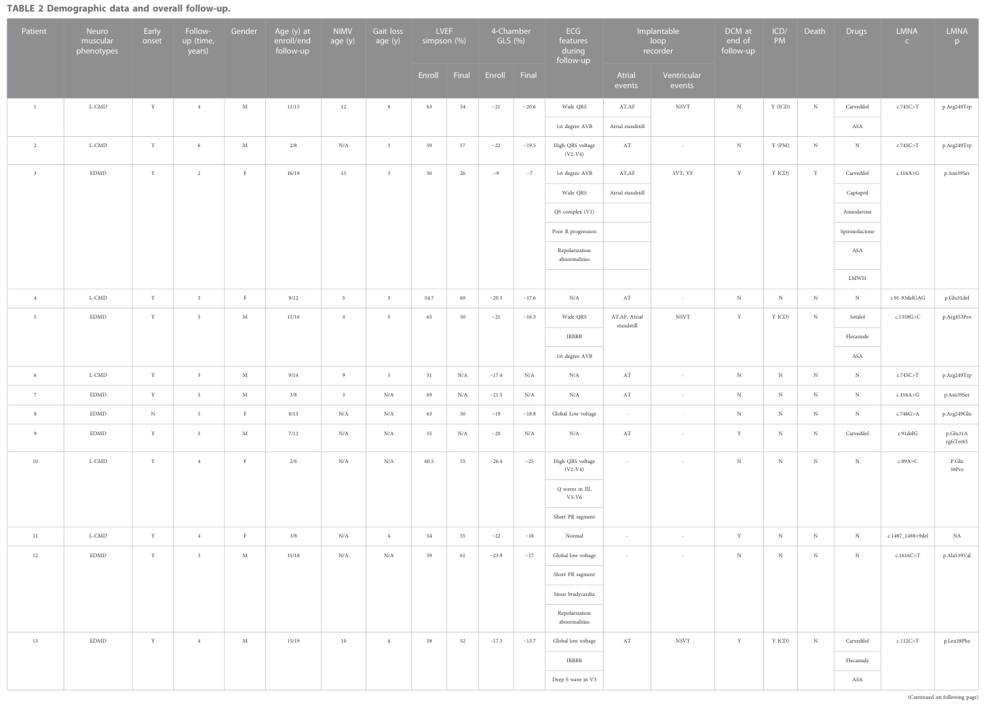

Emery-Dreifuss muscular dystrophy (EDMD) is a genetically heterogeneous, primarily Mendelian neuromuscular disorder within the spectrum of nuclear-envelope diseases (laminopathies / nuclear envelopathies). It is classically defined by a clinical triad of (i) early joint contractures (typically elbows, Achilles tendons, and posterior cervical/paraspinal muscles producing a rigid spine); (ii) slowly progressive skeletal muscle weakness and wasting in a humeroperoneal (later scapular and pelvic-girdle) distribution; and (iii) cardiac involvement dominated by atrial disease, conduction-system disease, and arrhythmia, with risk of thromboembolism, cardiomyopathy/heart failure, and sudden cardiac death. EDMD is caused by pathogenic variants in genes encoding nuclear lamina, inner-nuclear-membrane, and LINC-complex proteins that couple the nucleoskeleton to the cytoskeleton: X-linked EMD (emerin; EDMD1), autosomal dominant/recessive LMNA (lamin A/C; EDMD2/EDMD3), and additional nuclear-envelope genes SYNE1/SYNE2 (nesprin-1/-2), FHL1, and TMEM43 (LUMA). Convergent pathophysiology involves failure of nucleo-cytoskeletal coupling and mechanotransduction, mechanical-stress-induced nuclear damage and DNA-damage responses, and maladaptive transcriptional reprogramming (fibrosis, metabolism, splicing).
Ask a research question about Emery-Dreifuss Muscular Dystrophy. OpenScientist will conduct autonomous deep research using the Disorder Mechanisms Knowledge Base and PubMed literature (typically 10-30 minutes).
Do not include personal health information in your question. Questions and results are cached in your browser's local storage.
name: Emery-Dreifuss Muscular Dystrophy
creation_date: "2026-06-16T00:00:00Z"
category: Mendelian
disease_term:
preferred_term: Emery-Dreifuss muscular dystrophy
term:
id: MONDO:0016830
label: Emery-Dreifuss muscular dystrophy
description: >-
Emery-Dreifuss muscular dystrophy (EDMD) is a genetically heterogeneous,
primarily Mendelian neuromuscular disorder within the spectrum of
nuclear-envelope diseases (laminopathies / nuclear envelopathies). It is
classically defined by a clinical triad of (i) early joint contractures
(typically elbows, Achilles tendons, and posterior cervical/paraspinal
muscles producing a rigid spine); (ii) slowly progressive skeletal muscle
weakness and wasting in a humeroperoneal (later scapular and pelvic-girdle)
distribution; and (iii) cardiac involvement dominated by atrial disease,
conduction-system disease, and arrhythmia, with risk of thromboembolism,
cardiomyopathy/heart failure, and sudden cardiac death. EDMD is caused by
pathogenic variants in genes encoding nuclear lamina, inner-nuclear-membrane,
and LINC-complex proteins that couple the nucleoskeleton to the cytoskeleton:
X-linked EMD (emerin; EDMD1), autosomal dominant/recessive LMNA (lamin A/C;
EDMD2/EDMD3), and additional nuclear-envelope genes SYNE1/SYNE2 (nesprin-1/-2),
FHL1, and TMEM43 (LUMA). Convergent pathophysiology involves failure of
nucleo-cytoskeletal coupling and mechanotransduction, mechanical-stress-induced
nuclear damage and DNA-damage responses, and maladaptive transcriptional
reprogramming (fibrosis, metabolism, splicing).
references:
- reference: PMID:20301609
title: "Emery-Dreifuss Muscular Dystrophy."
tags:
- GeneReviews
- reference: PMID:31840275
title: "Emery-Dreifuss muscular dystrophy."
has_subtypes:
- name: EDMD1
display_name: EDMD1 (X-linked, EMD / emerin)
subtype_term:
preferred_term: Emery-Dreifuss muscular dystrophy 1, X-linked
term:
id: MONDO:0100531
label: Emery-Dreifuss muscular dystrophy 1, X-linked
description: >-
Classical X-linked EDMD caused by hemizygous pathogenic variants in EMD,
encoding emerin, an inner-nuclear-membrane protein (OMIM #310300). Males are
primarily affected; heterozygous female carriers are usually asymptomatic
but are at risk of later-onset cardiac disease. Cardiac phenotype is
dominated by atrial arrhythmia, conduction disease, and a substantial risk
of malignant ventricular arrhythmia and end-stage heart failure.
genes:
- preferred_term: EMD
term:
id: hgnc:3331
label: EMD
evidence:
- reference: PMID:7894480
reference_title: "Identification of a novel X-linked gene responsible for Emery-Dreifuss muscular dystrophy."
supports: SUPPORT
evidence_source: HUMAN_CLINICAL
snippet: "Emery-Dreifuss muscular dystrophy (EDMD) is an X-linked recessive disorder characterized by slowly progressing contractures, wasting of skeletal muscle and cardiomyopathy."
explanation: Original identification of the EMD gene (emerin) as the cause of X-linked EDMD.
- name: EDMD2
display_name: EDMD2 (autosomal dominant, LMNA / lamin A/C)
subtype_term:
preferred_term: Emery-Dreifuss muscular dystrophy 2, autosomal dominant
term:
id: MONDO:0021569
label: Emery-Dreifuss muscular dystrophy 2, autosomal dominant
description: >-
Autosomal dominant EDMD caused by heterozygous LMNA pathogenic variants,
encoding lamin A/C, a nuclear lamina intermediate filament protein
(OMIM #181350). Clinically identical to X-linked EDMD but with frequent
de novo variants and a more malignant cardiac trajectory (dilated
cardiomyopathy, end-stage heart failure, malignant ventricular arrhythmias).
Biallelic LMNA variants cause rare autosomal recessive EDMD3 (OMIM #616516).
genes:
- preferred_term: LMNA
term:
id: hgnc:6636
label: LMNA
evidence:
- reference: PMID:10080180
reference_title: "Mutations in the gene encoding lamin A/C cause autosomal dominant Emery-Dreifuss muscular dystrophy."
supports: SUPPORT
evidence_source: HUMAN_CLINICAL
snippet: "We identified four mutations in LMNA that co-segregate with the disease phenotype in the five families: one nonsense mutation and three missense mutations."
explanation: Original identification of LMNA mutations as the cause of autosomal dominant EDMD.
- name: EDMD4-5
display_name: EDMD4/EDMD5 (SYNE1 / SYNE2, nesprin-1/-2)
subtype_term:
preferred_term: Emery-Dreifuss muscular dystrophy 4, autosomal dominant
term:
id: MONDO:0013071
label: Emery-Dreifuss muscular dystrophy 4, autosomal dominant
description: >-
EDMD caused by variants in SYNE1 (nesprin-1; EDMD4, MONDO:0013071) or SYNE2
(nesprin-2; EDMD5, MONDO:0013072), spectrin-repeat proteins of the outer
nuclear membrane that bind emerin and lamin A/C and link the nucleoskeleton
to the cytoskeleton as part of the LINC complex. Nesprin mutations cause
nuclear morphology defects and mislocalization of emerin and SUN2. (This
combined node is grounded to the EDMD4/SYNE1 MONDO class; the EDMD5/SYNE2
class is MONDO:0013072.)
genes:
- preferred_term: SYNE1
term:
id: hgnc:17089
label: SYNE1
- preferred_term: SYNE2
term:
id: hgnc:17084
label: SYNE2
evidence:
- reference: PMID:17761684
reference_title: "Nesprin-1 and -2 are involved in the pathogenesis of Emery Dreifuss muscular dystrophy and are critical for nuclear envelope integrity."
supports: SUPPORT
evidence_source: HUMAN_CLINICAL
snippet: "Screening for DNA variations in the genes encoding nesprin-1 (SYNE1) and nesprin-2 (SYNE2) in 190 probands with EDMD or EDMD-like phenotypes identified four heterozygous missense mutations."
explanation: Identification of SYNE1/SYNE2 (nesprin) mutations in EDMD probands.
- name: EDMD6
display_name: EDMD6 (X-linked, FHL1)
subtype_term:
preferred_term: Emery-Dreifuss muscular dystrophy 6, X-linked
term:
id: MONDO:0800318
label: Emery-Dreifuss muscular dystrophy 6, X-linked
description: >-
X-linked EDMD caused by FHL1 variants. The predominant phenotype is myopathy
with scapulo-peroneal and/or axial distribution plus joint contractures,
associated with a cardiac disease that includes conduction defects,
arrhythmias, and hypertrophic cardiomyopathy.
genes:
- preferred_term: FHL1
term:
id: hgnc:3702
label: FHL1
evidence:
- reference: PMID:19716112
reference_title: "Mutations of the FHL1 gene cause Emery-Dreifuss muscular dystrophy."
supports: SUPPORT
evidence_source: HUMAN_CLINICAL
snippet: "In conclusion, FHL1 should be considered as a gene associated with the X-linked EDMD phenotype, as well as with hypertrophic cardiomyopathy."
explanation: Establishes FHL1 as a cause of X-linked EDMD with hypertrophic cardiomyopathy.
- name: EDMD7
display_name: EDMD7 (autosomal dominant, TMEM43 / LUMA)
subtype_term:
preferred_term: Emery-Dreifuss muscular dystrophy 7, autosomal dominant
term:
id: MONDO:0013677
label: Emery-Dreifuss muscular dystrophy 7, autosomal dominant
description: >-
EDMD-related myopathy caused by heterozygous TMEM43 variants, encoding LUMA,
a nuclear-membrane protein and binding partner of emerin and lamins
(OMIM #612048). Mutant LUMA fails to oligomerize and causes reduced nuclear
staining of emerin and SUN2 with abnormally shaped nuclei.
genes:
- preferred_term: TMEM43
term:
id: hgnc:28472
label: TMEM43
evidence:
- reference: PMID:21391237
reference_title: "TMEM43 mutations in Emery-Dreifuss muscular dystrophy-related myopathy."
supports: SUPPORT
evidence_source: HUMAN_CLINICAL
snippet: "We identified heterozygous missense mutations, p.Glu85Lys and p.Ile91Val in TMEM43, in 2 EDMD-related myopathy patients."
explanation: Identification of TMEM43 (LUMA) mutations in EDMD-related myopathy.
pathophysiology:
- name: Nuclear Envelope and LINC Complex Dysfunction
description: >-
EDMD is caused by loss or dysfunction of nuclear-envelope proteins (emerin,
lamin A/C) and LINC-complex components (nesprins, SUN proteins, LUMA) that
physically couple the nucleoskeleton to the cytoskeleton. These proteins form
an interacting network spanning the nuclear lamina, inner nuclear membrane,
and outer nuclear membrane. Pathogenic variants disrupt nesprin/emerin/lamin
binding, mislocalize emerin and SUN2, and compromise nuclear envelope
integrity, which is the upstream defect common across all EDMD subtypes.
cell_types:
- preferred_term: skeletal muscle myoblast
term:
id: CL:0000056
label: myoblast
cellular_components:
- preferred_term: nuclear envelope
term:
id: GO:0005635
label: nuclear envelope
- preferred_term: nuclear lamina
term:
id: GO:0005652
label: nuclear lamina
- preferred_term: inner nuclear membrane
term:
id: GO:0005637
label: nuclear inner membrane
biological_processes:
- preferred_term: nuclear envelope organization
term:
id: GO:0006998
label: nuclear envelope organization
modifier: ABNORMAL
downstream:
- target: Impaired Mechanotransduction and Nuclear Mechanical Fragility
causal_link_type: DIRECT
evidence:
- reference: PMID:17761684
reference_title: "Nesprin-1 and -2 are involved in the pathogenesis of Emery Dreifuss muscular dystrophy and are critical for nuclear envelope integrity."
supports: SUPPORT
evidence_source: IN_VITRO
snippet: "diminished nuclear envelope localization of nesprins and impaired nesprin/emerin/lamin binding interactions were common features of all EDMD patient fibroblasts."
explanation: >-
Demonstrates that disrupted nesprin/emerin/lamin interactions and nuclear
envelope localization are a common feature across EDMD patient cells,
establishing nuclear-envelope/LINC-complex dysfunction as the shared
upstream defect.
- reference: PMID:21391237
reference_title: "TMEM43 mutations in Emery-Dreifuss muscular dystrophy-related myopathy."
supports: SUPPORT
evidence_source: IN_VITRO
snippet: "Cells expressing mutant LUMA revealed reduced nuclear staining with or without aggregates of emerin and SUN2 together with a higher proportion of abnormally shaped nuclei."
explanation: >-
Shows mutant LUMA (TMEM43) disrupts emerin and SUN2 localization and
nuclear shape, illustrating convergent nuclear-envelope dysfunction.
- name: Impaired Mechanotransduction and Nuclear Mechanical Fragility
description: >-
Striated muscle nuclei are continuously exposed to mechanical strain. A
functional nuclear envelope / LINC complex transmits and buffers these
forces. In EDMD, defective nucleo-cytoskeletal coupling impairs
mechanotransduction and renders nuclei mechanically fragile. In LMNA-mutant
(EDMD2) myoblasts under cyclic stretch, lamin A/C fails to recruit desmin and
plectin to the nuclear periphery and nuclei fail to reorient properly,
directly linking the molecular defect to defective mechanosignaling.
cell_types:
- preferred_term: skeletal muscle myoblast
term:
id: CL:0000056
label: myoblast
biological_processes:
- preferred_term: cellular response to mechanical stimulus
term:
id: GO:0071260
label: cellular response to mechanical stimulus
modifier: ABNORMAL
downstream:
- target: Mechanical-Stress-Induced Nuclear Damage and DNA Damage Response
causal_link_type: DIRECT
evidence:
- reference: PMID:38247853
reference_title: "Desmin and Plectin Recruitment to the Nucleus and Nuclei Orientation Are Lost in Emery-Dreifuss Muscular Dystrophy Myoblasts Subjected to Mechanical Stimulation."
supports: SUPPORT
evidence_source: IN_VITRO
snippet: "in Emery-Dreifuss Muscular Dystrophy (EDMD2) myoblasts exposed to mechanical stretching, the recruitment of desmin and plectin to the nucleus and nuclear orientation were impaired, suggesting that a functional lamin A/C is crucial for the response to mechanical strain."
explanation: >-
Directly demonstrates impaired mechanotransduction in EDMD2 myoblasts:
lamin A/C dysfunction prevents recruitment of cytoskeletal proteins to the
nucleus and proper nuclear reorientation under mechanical strain.
- name: Mechanical-Stress-Induced Nuclear Damage and DNA Damage Response
description: >-
Mechanically fragile EDMD nuclei accumulate damage under physiologic strain,
including stretch-induced DNA damage and activation of DNA-damage responses
(e.g., gamma-H2A.X foci, p53 signaling). Muscle-specific loss of the
nuclear-envelope protein NET39 in mice recapitulates EDMD-like muscle wasting
with abnormal myonuclei and DNA damage, and renders myoblasts hypersensitive
to mechanical stretch, establishing a mechanical-stress to DNA-damage axis as
a contributor to muscle degeneration.
cell_types:
- preferred_term: skeletal muscle fiber
term:
id: CL:0008002
label: skeletal muscle fiber
biological_processes:
- preferred_term: DNA damage response
term:
id: GO:0006974
label: DNA damage response
modifier: INCREASED
downstream:
- target: Maladaptive Transcriptional Reprogramming and Fibro-Fatty Remodeling
causal_link_type: INDIRECT_UNKNOWN_INTERMEDIATES
evidence:
- reference: PMID:37395273
reference_title: "Net39 protects muscle nuclei from mechanical stress during the pathogenesis of Emery-Dreifuss muscular dystrophy."
supports: SUPPORT
evidence_source: MODEL_ORGANISM
snippet: "cKO mice recapitulated key skeletal muscle features of EDMD, including muscle wasting, impaired muscle contractility, abnormal myonuclear morphology, and DNA damage. The loss of Net39 rendered myoblasts hypersensitive to mechanical stretch, resulting in stretch-induced DNA damage."
explanation: >-
Mouse model evidence that nuclear-envelope dysfunction causes
mechanical-stress-induced DNA damage and EDMD-like muscle pathology.
- name: Maladaptive Transcriptional Reprogramming and Fibro-Fatty Remodeling
description: >-
Nuclear-envelope dysfunction alters chromatin organization and gene
expression programs. Transcriptomic analysis of EDMD-spectrum patient
myotubes across seven causal genes shows convergent dysregulation of
fibrosis/ECM, metabolism, myogenic signaling, and splicing pathways. This
maladaptive reprogramming drives muscle fiber degeneration with fibro-fatty
remodeling in skeletal muscle and contributes to fibrosis and electrical
instability in the heart.
cell_types:
- preferred_term: skeletal muscle fiber
term:
id: CL:0008002
label: skeletal muscle fiber
biological_processes:
- preferred_term: extracellular matrix organization
term:
id: GO:0030198
label: extracellular matrix organization
modifier: INCREASED
- preferred_term: RNA splicing
term:
id: GO:0008380
label: RNA splicing
modifier: ABNORMAL
- preferred_term: muscle cell differentiation
term:
id: GO:0042692
label: muscle cell differentiation
modifier: ABNORMAL
downstream:
- target: Cardiac Conduction Disease and Arrhythmogenesis
causal_link_type: INDIRECT_UNKNOWN_INTERMEDIATES
- target: Joint contractures
causal_link_type: INDIRECT_UNKNOWN_INTERMEDIATES
- target: Elbow contracture
causal_link_type: INDIRECT_UNKNOWN_INTERMEDIATES
- target: Achilles tendon contracture
causal_link_type: INDIRECT_UNKNOWN_INTERMEDIATES
- target: Spinal rigidity
causal_link_type: INDIRECT_UNKNOWN_INTERMEDIATES
- target: Muscle weakness
causal_link_type: DIRECT
- target: Peroneal muscle weakness
causal_link_type: DIRECT
- target: Muscle atrophy and wasting
causal_link_type: DIRECT
- target: Respiratory insufficiency
causal_link_type: INDIRECT_UNKNOWN_INTERMEDIATES
evidence:
- reference: PMID:36282542
reference_title: "Metabolic, fibrotic and splicing pathways are all altered in Emery-Dreifuss muscular dystrophy spectrum patients to differing degrees."
supports: SUPPORT
evidence_source: IN_VITRO
snippet: "the pathway analysis revealed that multiple genes involved in fibrosis, metabolism, myogenic signaling and splicing were affected in all patients."
explanation: >-
RNA-seq across EDMD-spectrum patient cells (seven causal genes) shows
convergent dysregulation of fibrosis, metabolism, myogenic signaling, and
splicing pathways downstream of nuclear-envelope dysfunction.
- name: Cardiac Conduction Disease and Arrhythmogenesis
description: >-
Cardiac involvement is the principal determinant of morbidity and mortality
in EDMD. Nuclear-envelope dysfunction in atrial and conduction-system
cardiomyocytes produces an atrial myopathy with progressive conduction
disease (AV block, sinus node dysfunction), atrial arrhythmia (atrial
fibrillation/flutter), and atrial standstill, with attendant thromboembolic
risk. EMD and especially LMNA variants additionally confer a high risk of
malignant ventricular arrhythmia and progression to dilated cardiomyopathy,
end-stage heart failure, and sudden cardiac death. Pacing alone does not
prevent sudden death from ventricular arrhythmia, so ICD therapy is often
required.
cell_types:
- preferred_term: cardiac muscle cell
term:
id: CL:0000746
label: cardiac muscle cell
- preferred_term: cardiac Purkinje conduction myocyte
term:
id: CL:0002068
label: Purkinje myocyte
- preferred_term: nodal (pacemaker/conduction) myocyte
term:
id: CL:0002072
label: nodal myocyte
biological_processes:
- preferred_term: cardiac conduction
term:
id: GO:0061337
label: cardiac conduction
modifier: ABNORMAL
evidence:
- reference: PMID:37639473
reference_title: "Emery-Dreifuss muscular dystrophy Type 1 is associated with a high risk of malignant ventricular arrhythmias and end-stage heart failure."
supports: SUPPORT
evidence_source: HUMAN_CLINICAL
snippet: "Cardiac conduction defects and atrial arrhythmia are common to both, but LMNA variants also cause end-stage heart failure (ESHF) and malignant ventricular arrhythmia (MVA)."
explanation: >-
Establishes conduction disease and atrial arrhythmia as common to EDMD1
and EDMD2, with LMNA additionally causing end-stage heart failure and
malignant ventricular arrhythmia.
- reference: PMID:35453731
reference_title: "Clinical Profile, Arrhythmias, and Adverse Cardiac Outcomes in Emery-Dreifuss Muscular Dystrophies: A Systematic Review of the Literature."
supports: SUPPORT
evidence_source: HUMAN_CLINICAL
snippet: "The whole spectrum of cardiac manifestations encompasses atrial arrhythmias, conduction disturbances, progressive systolic dysfunction, and malignant ventricular arrhythmias."
explanation: >-
Systematic review summarizing the cardiac manifestation spectrum of
EDMD/cardiolaminopathies.
downstream:
- target: Atrioventricular block
causal_link_type: DIRECT
- target: Atrial fibrillation
causal_link_type: DIRECT
- target: Atrial standstill
causal_link_type: DIRECT
- target: Dilated cardiomyopathy
causal_link_type: DIRECT
- target: Ventricular arrhythmia
causal_link_type: DIRECT
- target: Sudden cardiac death
causal_link_type: INDIRECT_UNKNOWN_INTERMEDIATES
- target: Thromboembolism
causal_link_type: INDIRECT_UNKNOWN_INTERMEDIATES
- target: Hypertrophic cardiomyopathy
causal_link_type: DIRECT
phenotypes:
- name: Joint contractures
description: >-
Early joint contractures are a defining feature, typically beginning in the
first two decades and characteristically affecting the elbows, Achilles
tendons, and posterior cervical/paraspinal muscles.
phenotype_term:
preferred_term: Joint contracture
term:
id: HP:0034392
label: Joint contracture
onset:
onset_category: CHILDHOOD
evidence:
- reference: PMID:20301609
reference_title: "Emery-Dreifuss Muscular Dystrophy."
supports: SUPPORT
evidence_source: HUMAN_CLINICAL
snippet: "the clinical triad of joint contractures that begin in early childhood"
explanation: GeneReviews documents early-childhood joint contractures as part of the defining triad.
- name: Elbow contracture
description: >-
Flexion contractures of the elbows are among the earliest and most
characteristic contractures in EDMD.
phenotype_term:
preferred_term: Elbow contracture
term:
id: HP:0034391
label: Elbow contracture
evidence:
- reference: PMID:10080180
reference_title: "Mutations in the gene encoding lamin A/C cause autosomal dominant Emery-Dreifuss muscular dystrophy."
supports: SUPPORT
evidence_source: HUMAN_CLINICAL
snippet: "Emery-Dreifuss muscular dystrophy (EDMD) is characterized by early contractures of elbows and Achilles tendons"
explanation: Directly documents early elbow contractures as characteristic of EDMD.
- name: Achilles tendon contracture
description: >-
Contractures of the Achilles tendons are characteristic and contribute to
toe-walking and gait disturbance.
phenotype_term:
preferred_term: Achilles tendon contracture
term:
id: HP:0001771
label: Achilles tendon contracture
evidence:
- reference: PMID:10080180
reference_title: "Mutations in the gene encoding lamin A/C cause autosomal dominant Emery-Dreifuss muscular dystrophy."
supports: SUPPORT
evidence_source: HUMAN_CLINICAL
snippet: "Emery-Dreifuss muscular dystrophy (EDMD) is characterized by early contractures of elbows and Achilles tendons"
explanation: Directly documents early Achilles tendon contractures as characteristic of EDMD.
- name: Spinal rigidity
description: >-
Rigidity of the spine, due to contractures of the posterior cervical and
paraspinal musculature, limits neck and trunk flexion and is part of the
characteristic contracture pattern.
phenotype_term:
preferred_term: Spinal rigidity
term:
id: HP:0003306
label: Spinal rigidity
evidence:
- reference: PMID:20301609
reference_title: "Emery-Dreifuss Muscular Dystrophy."
supports: SUPPORT
evidence_source: HUMAN_CLINICAL
snippet: "Assess joints for contractures and mobility, and spine for rigidity, posture, flexibility"
explanation: >-
GeneReviews surveillance recommendations specifically reference spinal
rigidity as a feature to monitor.
- name: Muscle weakness
description: >-
Slowly progressive muscle weakness and wasting, initially in a humeroperoneal
distribution and later extending to scapular and pelvic-girdle muscles.
phenotype_term:
preferred_term: Humeroperoneal muscle weakness
term:
id: HP:0003701
label: Proximal muscle weakness
clinical_course: PROGRESSIVE
notes: >-
HP:0003701 (Proximal muscle weakness) is broader than the EDMD distribution:
the characteristic humeroperoneal pattern includes both a proximal
upper-limb (humeral/biceps-triceps) component and a distal lower-limb
(peroneal) component. The distal peroneal component is captured separately
in the dedicated "Peroneal muscle weakness" phenotype (HP:0011727).
evidence:
- reference: PMID:20301609
reference_title: "Emery-Dreifuss Muscular Dystrophy."
supports: SUPPORT
evidence_source: HUMAN_CLINICAL
snippet: "slowly progressive muscle weakness and wasting initially in a humeroperoneal distribution that later extends to the scapular and pelvic girdle muscles"
explanation: GeneReviews documents the characteristic humeroperoneal pattern of progressive weakness.
- name: Peroneal muscle weakness
description: >-
Weakness of the peroneal (anterolateral lower-leg) muscles is part of the
characteristic humeroperoneal distribution and contributes to foot drop.
phenotype_term:
preferred_term: Peroneal muscle weakness
term:
id: HP:0011727
label: Peroneal muscle weakness
evidence:
- reference: PMID:20301609
reference_title: "Emery-Dreifuss Muscular Dystrophy."
supports: SUPPORT
evidence_source: HUMAN_CLINICAL
snippet: "humeroperoneal (or more rarely limb-girdle) muscle weakness and wasting"
explanation: GeneReviews documents humeroperoneal weakness, of which peroneal involvement is a component.
- name: Muscle atrophy and wasting
description: >-
Progressive skeletal muscle wasting accompanies the weakness, following the
same humeroperoneal-then-scapular/pelvic-girdle distribution; "weakness and
wasting" together constitute the skeletal-muscle limb of the EDMD clinical
triad.
phenotype_term:
preferred_term: Skeletal muscle atrophy
term:
id: HP:0003202
label: Skeletal muscle atrophy
clinical_course: PROGRESSIVE
evidence:
- reference: PMID:20301609
reference_title: "Emery-Dreifuss Muscular Dystrophy."
supports: SUPPORT
evidence_source: HUMAN_CLINICAL
snippet: "slowly progressive muscle weakness and wasting initially in a humeroperoneal distribution that later extends to the scapular and pelvic girdle muscles"
explanation: GeneReviews documents progressive muscle wasting (atrophy) accompanying the weakness in EDMD.
- name: Atrioventricular block
description: >-
Conduction-system disease, including atrioventricular block, is a hallmark
cardiac manifestation and a frequent cause of death; it may require pacemaker
implantation.
phenotype_term:
preferred_term: Atrioventricular block
term:
id: HP:0001678
label: Atrioventricular block
evidence:
- reference: PMID:10080180
reference_title: "Mutations in the gene encoding lamin A/C cause autosomal dominant Emery-Dreifuss muscular dystrophy."
supports: SUPPORT
evidence_source: HUMAN_CLINICAL
snippet: "a cardiomyopathy with conduction blocks which is life-threatening"
explanation: Documents life-threatening conduction block as a defining cardiac feature of EDMD.
- name: Atrial fibrillation
description: >-
Atrial arrhythmias including atrial fibrillation, flutter, and tachycardia
are common and carry thromboembolic risk.
phenotype_term:
preferred_term: Atrial fibrillation
term:
id: HP:0005110
label: Atrial fibrillation
evidence:
- reference: PMID:35453731
reference_title: "Clinical Profile, Arrhythmias, and Adverse Cardiac Outcomes in Emery-Dreifuss Muscular Dystrophies: A Systematic Review of the Literature."
supports: SUPPORT
evidence_source: HUMAN_CLINICAL
snippet: "The IR for atrial fibrillation/atrial flutter/atrial tachycardia ranged between 6.1 and 13.9 events/100 pts-year."
explanation: Systematic review quantifies the incidence of atrial fibrillation/flutter/tachycardia in EDMD cohorts.
- name: Atrial standstill
description: >-
Progressive atrial myopathy can evolve to atrial standstill (absence of
atrial electrical/mechanical activity), which carries a high thromboembolic
risk and may warrant anticoagulation.
phenotype_term:
preferred_term: Atrial standstill
term:
id: HP:0025478
label: Atrial standstill
evidence:
- reference: PMID:35453731
reference_title: "Clinical Profile, Arrhythmias, and Adverse Cardiac Outcomes in Emery-Dreifuss Muscular Dystrophies: A Systematic Review of the Literature."
supports: SUPPORT
evidence_source: HUMAN_CLINICAL
snippet: "The IR of atrial standstill ranged between 0 and 2 events/100 pts-year."
explanation: Systematic review reports atrial standstill incidence in EDMD/cardiolaminopathy cohorts.
- name: Dilated cardiomyopathy
description: >-
Dilated cardiomyopathy with progressive systolic dysfunction develops
particularly in LMNA-related EDMD and can progress to end-stage heart
failure requiring transplantation.
phenotype_term:
preferred_term: Dilated cardiomyopathy
term:
id: HP:0001644
label: Dilated cardiomyopathy
evidence:
- reference: PMID:36968203
reference_title: "Characterization of cardiac involvement in children with LMNA-related muscular dystrophy."
supports: SUPPORT
evidence_source: HUMAN_CLINICAL
snippet: "Follow-up showed dilated cardiomyopathy (DCM) in six patients and malignant arrhythmias in five (four concomitant with DCM)"
explanation: Pediatric LMNA cohort documents dilated cardiomyopathy as a frequent outcome.
- name: Ventricular arrhythmia
description: >-
Malignant ventricular arrhythmias are a major cause of sudden death,
particularly in LMNA-related and EMD-related disease, often disproportionate
to the degree of systolic dysfunction. Pacing does not protect against them,
so ICD therapy is frequently indicated.
phenotype_term:
preferred_term: Ventricular arrhythmia
term:
id: HP:0004308
label: Ventricular arrhythmia
evidence:
- reference: PMID:37639473
reference_title: "Emery-Dreifuss muscular dystrophy Type 1 is associated with a high risk of malignant ventricular arrhythmias and end-stage heart failure."
supports: SUPPORT
evidence_source: HUMAN_CLINICAL
snippet: "Nine (23.7%) males developed MVA and five (13.2%) developed ESHF during a median (inter-quartile range) follow-up of 65.0 (24.3-109.5) months."
explanation: >-
Documents the substantial risk of malignant ventricular arrhythmia in male
EMD variant carriers.
- name: Sudden cardiac death
description: >-
Sudden cardiac death, from conduction block or malignant ventricular
arrhythmia, is a leading cause of mortality and a major rationale for
intensive cardiac surveillance and device therapy.
phenotype_term:
preferred_term: Sudden cardiac death
term:
id: HP:0001645
label: Sudden cardiac death
evidence:
- reference: PMID:35453731
reference_title: "Clinical Profile, Arrhythmias, and Adverse Cardiac Outcomes in Emery-Dreifuss Muscular Dystrophies: A Systematic Review of the Literature."
supports: SUPPORT
evidence_source: HUMAN_CLINICAL
snippet: "studies focusing on cardiovascular outcomes in LMNA mutation carriers (atrial arrhythmias, ventricular arrhythmias, sudden cardiac death, conduction disturbances, thromboembolic events, systolic dysfunction, heart transplantation, and all-cause and cardiovascular mortality)"
explanation: Systematic review includes sudden cardiac death among the cardiovascular outcomes of cardiolaminopathies.
- name: Thromboembolism
description: >-
Atrial arrhythmia and atrial standstill predispose to thromboembolism,
including stroke, sometimes occurring even without documented atrial
arrhythmia in LMNA cohorts.
phenotype_term:
preferred_term: Thromboembolism
term:
id: HP:0001907
label: Thromboembolism
evidence:
- reference: PMID:35453731
reference_title: "Clinical Profile, Arrhythmias, and Adverse Cardiac Outcomes in Emery-Dreifuss Muscular Dystrophies: A Systematic Review of the Literature."
supports: SUPPORT
evidence_source: HUMAN_CLINICAL
snippet: "The IR of thromboembolic events reached up to 8.9 events/100 pts-year."
explanation: Systematic review quantifies thromboembolic event incidence in EDMD/cardiolaminopathy cohorts.
- name: Hypertrophic cardiomyopathy
description: >-
In FHL1-related EDMD (EDMD6), the associated cardiac disease characteristically
includes hypertrophic cardiomyopathy in addition to conduction defects and
arrhythmias.
phenotype_term:
preferred_term: Hypertrophic cardiomyopathy
term:
id: HP:0001639
label: Hypertrophic cardiomyopathy
subtype: EDMD6
evidence:
- reference: PMID:19716112
reference_title: "Mutations of the FHL1 gene cause Emery-Dreifuss muscular dystrophy."
supports: SUPPORT
evidence_source: HUMAN_CLINICAL
snippet: "associated with a peculiar cardiac disease characterized by conduction defects, arrhythmias, and hypertrophic cardiomyopathy in all index cases of the seven families."
explanation: FHL1-related EDMD is associated with hypertrophic cardiomyopathy.
- name: Respiratory insufficiency
description: >-
Respiratory function may be impaired due to involvement of respiratory
muscles, especially in severe/early-onset phenotypes, and may require
respiratory aids.
phenotype_term:
preferred_term: Respiratory insufficiency due to muscle weakness
term:
id: HP:0002747
label: Respiratory insufficiency due to muscle weakness
evidence:
- reference: PMID:20301609
reference_title: "Emery-Dreifuss Muscular Dystrophy."
supports: SUPPORT
evidence_source: HUMAN_CLINICAL
snippet: "respiratory function may be impaired in some individuals"
explanation: GeneReviews documents respiratory impairment in some individuals with EDMD.
biochemical:
- name: Elevated serum creatine kinase
presence: INCREASED
biomarker_term:
preferred_term: Creatine Kinase
term:
id: NCIT:C113245
label: Creatine Kinase
notes: >-
Serum creatine kinase is often mildly to moderately elevated in EDMD,
reflecting ongoing muscle fiber damage, though it can be normal. CK
elevation in EDMD is typically modest compared with other muscular
dystrophies; clinical and genetic evaluation, not CK, establishes the
diagnosis.
genetic:
- name: EMD
gene_term:
preferred_term: EMD
term:
id: hgnc:3331
label: EMD
association: Loss-of-function variants (X-linked recessive)
subtype: EDMD1
notes: >-
Hemizygous EMD variants (typically loss of function, with absent or reduced
emerin) cause X-linked EDMD1.
evidence:
- reference: PMID:7894480
reference_title: "Identification of a novel X-linked gene responsible for Emery-Dreifuss muscular dystrophy."
supports: SUPPORT
evidence_source: HUMAN_CLINICAL
snippet: "these mutations result in the loss of all or part of the protein. The EDMD gene encodes a novel serine-rich protein termed emerin"
explanation: Original identification of loss-of-function EMD (emerin) mutations in X-linked EDMD.
- name: LMNA
gene_term:
preferred_term: LMNA
term:
id: hgnc:6636
label: LMNA
association: Heterozygous (dominant) and rare biallelic (recessive) variants
subtype: EDMD2
notes: >-
Heterozygous LMNA variants cause autosomal dominant EDMD2 (often de novo);
rare biallelic variants cause autosomal recessive EDMD3.
evidence:
- reference: PMID:10080180
reference_title: "Mutations in the gene encoding lamin A/C cause autosomal dominant Emery-Dreifuss muscular dystrophy."
supports: SUPPORT
evidence_source: HUMAN_CLINICAL
snippet: "These results are the first identification of mutations in a component of the nuclear lamina as a cause of inherited muscle disorder."
explanation: Establishes LMNA (lamin A/C, a nuclear lamina component) as a cause of EDMD.
- name: SYNE1
gene_term:
preferred_term: SYNE1
term:
id: hgnc:17089
label: SYNE1
association: Heterozygous (dominant) variants
subtype: EDMD4-5
notes: >-
Heterozygous SYNE1 (nesprin-1) variants cause autosomal dominant EDMD4.
Nesprin-1 is an outer-nuclear-membrane spectrin-repeat LINC-complex protein;
variants disrupt nuclear envelope integrity and mislocalize emerin/SUN2.
evidence:
- reference: PMID:17761684
reference_title: "Nesprin-1 and -2 are involved in the pathogenesis of Emery Dreifuss muscular dystrophy and are critical for nuclear envelope integrity."
supports: SUPPORT
evidence_source: HUMAN_CLINICAL
snippet: "Screening for DNA variations in the genes encoding nesprin-1 (SYNE1) and nesprin-2 (SYNE2) in 190 probands with EDMD or EDMD-like phenotypes identified four heterozygous missense mutations."
explanation: Identification of SYNE1 (nesprin-1) mutations in EDMD probands.
- name: SYNE2
gene_term:
preferred_term: SYNE2
term:
id: hgnc:17084
label: SYNE2
association: Heterozygous (dominant) variants
subtype: EDMD4-5
notes: >-
Heterozygous SYNE2 (nesprin-2) variants cause autosomal dominant EDMD5.
Nesprin-2 is an outer-nuclear-membrane spectrin-repeat LINC-complex protein
that, like nesprin-1, links the nucleoskeleton to the cytoskeleton.
evidence:
- reference: PMID:17761684
reference_title: "Nesprin-1 and -2 are involved in the pathogenesis of Emery Dreifuss muscular dystrophy and are critical for nuclear envelope integrity."
supports: SUPPORT
evidence_source: HUMAN_CLINICAL
snippet: "Screening for DNA variations in the genes encoding nesprin-1 (SYNE1) and nesprin-2 (SYNE2) in 190 probands with EDMD or EDMD-like phenotypes identified four heterozygous missense mutations."
explanation: Identification of SYNE2 (nesprin-2) mutations in EDMD probands.
- name: FHL1
gene_term:
preferred_term: FHL1
term:
id: hgnc:3702
label: FHL1
association: Hemizygous variants (X-linked)
subtype: EDMD6
notes: >-
FHL1 variants cause X-linked EDMD6, a scapulo-peroneal/axial myopathy with
joint contractures and cardiac disease that can include conduction defects,
arrhythmias, and hypertrophic cardiomyopathy.
evidence:
- reference: PMID:19716112
reference_title: "Mutations of the FHL1 gene cause Emery-Dreifuss muscular dystrophy."
supports: SUPPORT
evidence_source: HUMAN_CLINICAL
snippet: "In conclusion, FHL1 should be considered as a gene associated with the X-linked EDMD phenotype, as well as with hypertrophic cardiomyopathy."
explanation: Establishes FHL1 as a cause of X-linked EDMD with hypertrophic cardiomyopathy.
- name: TMEM43
gene_term:
preferred_term: TMEM43
term:
id: hgnc:28472
label: TMEM43
association: Heterozygous (dominant) variants
subtype: EDMD7
notes: >-
Heterozygous TMEM43 (LUMA) variants cause autosomal dominant EDMD7-related
myopathy. Mutant LUMA fails to oligomerize, reducing nuclear emerin/SUN2
staining and producing abnormally shaped nuclei.
evidence:
- reference: PMID:21391237
reference_title: "TMEM43 mutations in Emery-Dreifuss muscular dystrophy-related myopathy."
supports: SUPPORT
evidence_source: HUMAN_CLINICAL
snippet: "We identified heterozygous missense mutations, p.Glu85Lys and p.Ile91Val in TMEM43, in 2 EDMD-related myopathy patients."
explanation: Identification of TMEM43 (LUMA) mutations in EDMD-related myopathy.
inheritance:
- name: X-linked recessive inheritance
inheritance_term:
preferred_term: X-linked recessive inheritance
term:
id: HP:0001419
label: X-linked recessive inheritance
description: >-
EDMD1 (EMD) and EDMD6 (FHL1) are inherited in an X-linked manner. Males are
primarily affected; heterozygous female carriers are usually asymptomatic but
are at risk of developing cardiac disease.
evidence:
- reference: PMID:20301609
reference_title: "Emery-Dreifuss Muscular Dystrophy."
supports: SUPPORT
evidence_source: HUMAN_CLINICAL
snippet: "EDMD is inherited in an X-linked (XL), autosomal dominant (AD), or (rarely) autosomal recessive (AR) manner."
explanation: GeneReviews documents X-linked, autosomal dominant, and rare autosomal recessive inheritance.
- name: Autosomal dominant inheritance
inheritance_term:
preferred_term: Autosomal dominant inheritance
term:
id: HP:0000006
label: Autosomal dominant inheritance
description: >-
EDMD2 (LMNA) and EDMD4/5/7 (SYNE1/SYNE2/TMEM43) are inherited in an
autosomal dominant manner; a high proportion of LMNA-related AD-EDMD cases
arise de novo.
evidence:
- reference: PMID:20301609
reference_title: "Emery-Dreifuss Muscular Dystrophy."
supports: SUPPORT
evidence_source: HUMAN_CLINICAL
snippet: "Sixty-five percent of individuals with LMNA-related AD-EDMD have a de novo pathogenic variant."
explanation: GeneReviews documents autosomal dominant inheritance with a high de novo rate for LMNA-related EDMD.
- name: Autosomal recessive inheritance
inheritance_term:
preferred_term: Autosomal recessive inheritance
term:
id: HP:0000007
label: Autosomal recessive inheritance
description: >-
Rare autosomal recessive EDMD3 results from biallelic LMNA variants.
evidence:
- reference: PMID:20301609
reference_title: "Emery-Dreifuss Muscular Dystrophy."
supports: SUPPORT
evidence_source: HUMAN_CLINICAL
snippet: "(more rarely) biallelic pathogenic variants in LMNA or SUN1"
explanation: GeneReviews documents rare autosomal recessive EDMD from biallelic LMNA variants.
treatments:
- name: Cardiac pacemaker implantation
description: >-
Pacemaker implantation is indicated for advanced conduction disturbances
(e.g., high-grade AV block, sinus node dysfunction). Note that pacing alone
does not prevent sudden death from ventricular arrhythmia.
treatment_term:
preferred_term: pacemaker implantation
term:
id: MAXO:0009034
label: pacemaker implantation
evidence:
- reference: PMID:20301609
reference_title: "Emery-Dreifuss Muscular Dystrophy."
supports: SUPPORT
evidence_source: HUMAN_CLINICAL
snippet: "Treatment for cardiac disease can include antiarrhythmic drugs, oral anticoagulation, ablation procedures, cardiac pacemaker, implantable cardioverter-defibrillator"
explanation: GeneReviews lists cardiac pacemaker among standard cardiac treatments for EDMD.
- name: Implantable cardioverter-defibrillator placement
description: >-
ICD implantation is considered, particularly in LMNA-related disease and
when pacing is needed, because pacemakers alone do not prevent sudden death
from malignant ventricular arrhythmia. Early ICD implantation and heart
failure drug therapy are recommended in male EMD variant carriers with
cardiac disease.
treatment_term:
preferred_term: implantable cardioverter-defibrillator placement
term:
id: MAXO:0000474
label: implantable cardioverter-defibrillator placement
evidence:
- reference: PMID:37639473
reference_title: "Emery-Dreifuss muscular dystrophy Type 1 is associated with a high risk of malignant ventricular arrhythmias and end-stage heart failure."
supports: SUPPORT
evidence_source: HUMAN_CLINICAL
snippet: "Early implantable cardioverter defibrillator implantation and heart failure drug therapy should be considered in male EMD variant-carriers with cardiac disease."
explanation: Recommends early ICD implantation in EMD variant carriers with cardiac disease.
- name: Anticoagulant therapy
description: >-
Oral anticoagulation is used when atrial fibrillation/flutter or atrial
standstill is present, given the high thromboembolic risk.
treatment_term:
preferred_term: anticoagulant agent therapy
term:
id: MAXO:0000178
label: anticoagulant agent therapy
evidence:
- reference: PMID:20301609
reference_title: "Emery-Dreifuss Muscular Dystrophy."
supports: SUPPORT
evidence_source: HUMAN_CLINICAL
snippet: "Treatment for cardiac disease can include antiarrhythmic drugs, oral anticoagulation"
explanation: GeneReviews lists oral anticoagulation among standard cardiac treatments for EDMD.
- name: Physical therapy and stretching
description: >-
Physical therapy and stretching are used to prevent and manage contractures,
with orthopedic surgery to release contractures or manage scoliosis as needed.
treatment_term:
preferred_term: physical therapy
term:
id: MAXO:0000011
label: physical therapy
evidence:
- reference: PMID:20301609
reference_title: "Emery-Dreifuss Muscular Dystrophy."
supports: SUPPORT
evidence_source: HUMAN_CLINICAL
snippet: "physical therapy and stretching to prevent contractures"
explanation: GeneReviews recommends physical therapy and stretching to prevent contractures.
- name: Orthopedic surgery for contractures and scoliosis
description: >-
Surgery to release contractures and to manage scoliosis is performed as
needed.
treatment_term:
preferred_term: surgical procedure
term:
id: MAXO:0000004
label: surgical procedure
evidence:
- reference: PMID:20301609
reference_title: "Emery-Dreifuss Muscular Dystrophy."
supports: SUPPORT
evidence_source: HUMAN_CLINICAL
snippet: "Surgery to release contractures and manage scoliosis as needed"
explanation: GeneReviews recommends surgery for contracture release and scoliosis management.
- name: Heart transplantation
description: >-
Heart transplantation is appropriate for the end stages of heart failure.
treatment_term:
preferred_term: organ transplantation
term:
id: MAXO:0010039
label: organ transplantation
evidence:
- reference: PMID:20301609
reference_title: "Emery-Dreifuss Muscular Dystrophy."
supports: SUPPORT
evidence_source: HUMAN_CLINICAL
snippet: "heart transplantation for the end stages of heart failure as appropriate"
explanation: GeneReviews recommends heart transplantation for end-stage heart failure.
- name: Respiratory support
description: >-
Respiratory aids — including respiratory muscle training, assisted coughing
techniques, and mechanical (noninvasive) ventilation — are used as needed in
those with respiratory compromise.
treatment_term:
preferred_term: noninvasive ventilation
term:
id: MAXO:0000506
label: noninvasive ventilation
evidence:
- reference: PMID:20301609
reference_title: "Emery-Dreifuss Muscular Dystrophy."
supports: SUPPORT
evidence_source: HUMAN_CLINICAL
snippet: "respiratory aids (respiratory muscle training, assisted coughing techniques, mechanical ventilation) as needed"
explanation: GeneReviews recommends respiratory aids including mechanical ventilation as needed.
- name: Genetic counseling
description: >-
Genetic counseling addresses the X-linked, autosomal dominant, or rare
autosomal recessive inheritance, recurrence risk, cascade testing of
relatives at risk, and reproductive options including prenatal and
preimplantation genetic testing.
treatment_term:
preferred_term: genetic counseling
term:
id: MAXO:0000079
label: genetic counseling
evidence:
- reference: PMID:20301609
reference_title: "Emery-Dreifuss Muscular Dystrophy."
supports: SUPPORT
evidence_source: HUMAN_CLINICAL
snippet: "Once the EDMD-related pathogenic variant(s) have been identified in an affected family member, prenatal and preimplantation genetic testing for EDMD are possible."
explanation: GeneReviews documents the role of genetic testing and counseling for at-risk relatives and reproduction.
- name: Peri-operative anesthetic precautions (malignant hyperthermia avoidance)
description: >-
GeneReviews identifies safety-critical agents and circumstances to avoid in
EDMD. Triggering agents for malignant hyperthermia — depolarizing muscle
relaxants (succinylcholine) and volatile anesthetic drugs (e.g., halothane,
isoflurane) — should be avoided during anesthesia, and obesity should be
avoided. Anesthetic plans should also account for cardiac conduction disease
and arrhythmia risk in affected individuals.
treatment_term:
preferred_term: anesthesia procedure (malignant hyperthermia trigger avoidance)
term:
id: NCIT:C15181
label: Anesthesia Procedure
evidence:
- reference: PMID:20301609
reference_title: "Emery-Dreifuss Muscular Dystrophy."
supports: SUPPORT
evidence_source: HUMAN_CLINICAL
snippet: "Triggering agents for malignant hyperthermia, such as depolarizing muscle relaxants (succinylcholine) and volatile anesthetic drugs (halothane, isoflurane); obesity."
explanation: GeneReviews lists malignant-hyperthermia triggering agents and obesity among agents/circumstances to avoid in EDMD.
clinical_trials:
- name: NCT03439514
phase: PHASE_III
status: TERMINATED
description: >-
REALM-DCM — a Phase 3, multinational, randomized, placebo-controlled study of
ARRY-371797 (PF-07265803), an oral p38 MAPK inhibitor, in patients with
symptomatic dilated cardiomyopathy due to an LMNA (lamin A/C) gene mutation,
the gene underlying autosomal dominant EDMD2.
target_phenotypes:
- preferred_term: Dilated cardiomyopathy
term:
id: HP:0001644
label: Dilated cardiomyopathy
evidence:
- reference: clinicaltrials:NCT03439514
reference_title: "A Phase 3, Multinational, Randomized, Placebo-controlled Study of ARRY-371797 (PF-07265803) in Patients With Symptomatic Dilated Cardiomyopathy Due to a Lamin A/C Gene Mutation (REALM-DCM)"
supports: SUPPORT
evidence_source: HUMAN_CLINICAL
snippet: "This is a randomized, double-blind, placebo-controlled study in patients with dilated cardiomyopathy (DCM) due to a mutation of the gene encoding the lamin A/C protein (LMNA)."
explanation: A Phase 3 LMNA-specific trial directly relevant to the cardiac phenotype of LMNA-related (EDMD2) disease.
datasets: []
Emery–Dreifuss muscular dystrophy (EDMD) is a genetically heterogeneous, primarily Mendelian neuromuscular disorder within the spectrum of nuclear-envelope diseases (laminopathies/nuclear envelopathies), classically defined by a triad of (i) early musculo‑tendinous contractures, (ii) slowly progressive skeletal myopathy (often humero‑peroneal or scapulo‑humeroperoneal distribution), and (iii) cardiac involvement dominated by atrial disease, conduction system disease, arrhythmias, thromboembolism, and variable progression to cardiomyopathy/heart failure and sudden death. (granata2026cardiacinvolvementin pages 2-4, granata2026cardiacinvolvementin pages 4-6, cannie2023emery–dreifussmusculardystrophy pages 2-3)
Recent (2023–2024) literature underscores: (1) a substantial risk of malignant ventricular arrhythmias and end-stage heart failure even in X‑linked EDMD1 (EMD) male carriers, prompting earlier implantable cardioverter‑defibrillator (ICD) consideration; (2) high pediatric risk in early-onset LMNA-related phenotypes with frequent malignant arrhythmias detected by implantable loop recorders; (3) convergent pathophysiology across EDMD genes involving nucleo‑cytoskeletal coupling and mechanotransduction failure, mechanical-stress–induced nuclear damage/DNA damage responses, and transcriptional programs involving fibrosis, metabolism, and splicing; and (4) expanding registry infrastructure and multi‑omics studies aimed at modifier genes and molecular stratification to enable precision medicine. (cannie2023emery–dreifussmusculardystrophy pages 2-3, cesar2023characterizationofcardiac pages 1-2, heras2023metabolicfibroticand pages 1-2, NCT05394506 chunk 1)
EDMD is a rare inherited muscular dystrophy characterized by early contractures, progressive muscle weakness/atrophy, and cardiac conduction/arrhythmia complications that may be life‑threatening and can precede prominent skeletal muscle symptoms. (granata2026cardiacinvolvementin pages 2-4, granata2026cardiacinvolvementin pages 9-10)
A normalized identifier set extractable from the retrieved sources is provided in the table below.
| Identifier system | Identifier | Entity (disease/subtype/gene) | Notes (inheritance/causal gene) |
|---|---|---|---|
| MONDO | MONDO:0016830 | Emery-Dreifuss muscular dystrophy | Overall EDMD disease entity in OpenTargets/Monarch disease mapping; associated targets include LMNA, EMD, FHL1, SYNE1/2, TMEM43. URL: https://platform.opentargets.org/disease/MONDO_0016830 (OpenTargets Search: Emery-Dreifuss muscular dystrophy) |
| MONDO | MONDO:0010680 | X-linked Emery-Dreifuss muscular dystrophy | X-linked EDMD; OpenTargets links this entity to EMD and FHL1. URL: https://platform.opentargets.org/disease/MONDO_0010680 (OpenTargets Search: Emery-Dreifuss muscular dystrophy) |
| MONDO | MONDO:0021569 | Emery-Dreifuss muscular dystrophy 2, autosomal dominant | Autosomal dominant EDMD2; linked to LMNA. URL: https://platform.opentargets.org/disease/MONDO_0021569 (OpenTargets Search: Emery-Dreifuss muscular dystrophy) |
| MONDO | MONDO:0013071 | Emery-Dreifuss muscular dystrophy 4, autosomal dominant | Autosomal dominant EDMD4; linked to SYNE1. URL: https://platform.opentargets.org/disease/MONDO_0013071 (OpenTargets Search: Emery-Dreifuss muscular dystrophy) |
| MONDO | MONDO:0013677 | Emery-Dreifuss muscular dystrophy 7, autosomal dominant | Autosomal dominant EDMD7; linked to TMEM43. URL: https://platform.opentargets.org/disease/MONDO_0013677 (OpenTargets Search: Emery-Dreifuss muscular dystrophy) |
| OMIM phenotype | OMIM #310300 | EDMD1 / classical X-linked EDMD | X-linked EDMD caused by EMD variants; explicitly reported in review text as classical X-linked EDMD. DOI source: https://doi.org/10.3390/jcm15093286 (granata2026cardiacinvolvementin pages 1-2) |
| OMIM phenotype | OMIM #181350 | EDMD2 / autosomal dominant EDMD | Autosomal dominant EDMD caused by LMNA variants; explicitly reported in review text. DOI source: https://doi.org/10.3390/jcm15093286 (granata2026cardiacinvolvementin pages 1-2) |
| OMIM phenotype | OMIM #616516 | EDMD3 / autosomal recessive EDMD | Rare autosomal recessive EDMD; reported by Rahmuni et al. 2024. DOI source: https://doi.org/10.1159/000538917 (rahmuni2024twomoroccanfamilies pages 1-2) |
| OMIM gene | OMIM #300384 | EMD | Encodes emerin; major causal gene for EDMD1/X-linked EDMD. DOI source: https://doi.org/10.3390/jcm15093286 (granata2026cardiacinvolvementin pages 1-2) |
| OMIM gene | OMIM #150330 | LMNA | Encodes lamin A/C; major causal gene for EDMD2/autosomal dominant EDMD. DOI source: https://doi.org/10.3390/jcm15093286 (granata2026cardiacinvolvementin pages 1-2) |
| OMIM gene | OMIM #612048 | TMEM43 | Gene linked to EDMD7/autosomal dominant EDMD in retrieved review text. DOI source: https://doi.org/10.3390/jcm15093286 (granata2026cardiacinvolvementin pages 4-6) |
| OMIM gene | OMIM #125660 | DES | Desmin; referenced as related nuclear-cytoskeletal/cardiac phenotype gene in EDMD spectrum review. DOI source: https://doi.org/10.3390/jcm15093286 (granata2026cardiacinvolvementin pages 4-6) |
| Not extracted from retrieved full text | — | Orphanet / MeSH / ICD | Orphanet ORPHAcode, MeSH descriptor, and ICD-10/ICD-11 codes were not extracted from the retrieved full-text evidence used here. (granata2026cardiacinvolvementin pages 1-2, rahmuni2024twomoroccanfamilies pages 1-2, heller2020emery‐dreifussmusculardystrophy pages 1-2) |
Table: This table summarizes the core disease and gene identifiers for Emery-Dreifuss muscular dystrophy and key genetic subtypes, integrating MONDO/OpenTargets and OMIM evidence. It is useful for disease knowledge-base normalization and subtype-to-gene mapping.
Notes on missing identifiers: Orphanet ORPHAcode, MeSH descriptor ID, and ICD‑10/ICD‑11 codes were not extractable from the retrieved full texts in this run; this report therefore flags them as “not extracted” rather than guessing. (heller2020emery‐dreifussmusculardystrophy pages 1-2)
Commonly used descriptors include “Emery–Dreifuss muscular dystrophy,” “EDMD,” “X‑linked EDMD / EDMD1 (emerinopathy),” “autosomal dominant EDMD / EDMD2 (laminopathy),” and “cardiac emerinopathy” for predominantly cardiac EMD phenotypes. (granata2026cardiacinvolvementin pages 10-10, granata2026cardiacinvolvementin pages 4-6)
Information synthesized here is derived from aggregated disease-level reviews and systematic reviews, plus human cohorts/case reports, mechanistic in vitro studies in patient cells, and animal models. (cesar2023characterizationofcardiac pages 1-2, heras2023metabolicfibroticand pages 1-2, zhang2023net39protectsmuscle pages 1-2)
EDMD is primarily genetic, caused by pathogenic variants in nuclear envelope / nuclear lamina / LINC complex and related proteins, with major forms due to EMD (emerin; X‑linked EDMD1) and LMNA (lamin A/C; autosomal dominant EDMD2). (cannie2023emery–dreifussmusculardystrophy pages 2-3, granata2026cardiacinvolvementin pages 1-2)
Additional genes implicated in EDMD spectrum include FHL1, SYNE1/SYNE2, TMEM43, and other nuclear-envelope genes. (granata2026cardiacinvolvementin pages 4-6, heller2020emery‐dreifussmusculardystrophy pages 1-2)
Primary risk factor: carrying a pathogenic/likely pathogenic variant in a causal gene (e.g., EMD or LMNA). (cannie2023emery–dreifussmusculardystrophy pages 2-3, granata2026cardiacinvolvementin pages 1-2)
Sex as a risk modifier in X‑linked EDMD1: males are predominantly affected for skeletal muscle phenotype; female carriers can develop later-onset cardiac disease. (cannie2023emery–dreifussmusculardystrophy pages 2-3, granata2026cardiacinvolvementin pages 10-10)
No validated protective genetic variants or environmental protective factors were identified in the retrieved evidence.
Not clearly established in the retrieved evidence; mechanistic work supports that mechanical load/stress (an environmental/physiologic exposure in muscle) interacts with nuclear-envelope fragility and LINC complex dysfunction to drive nuclear damage and myopathy. (zhang2023net39protectsmuscle pages 1-2, cenni2024desminandplectin pages 2-4)
Classic triad (definitional): 1) Early joint/tendon contractures (commonly elbows, Achilles, posterior cervical/paraspinal musculature/rigid spine). (granata2026cardiacinvolvementin pages 2-4, granata2026cardiacinvolvementin pages 6-7) 2) Slowly progressive skeletal muscle weakness/atrophy (often humero‑peroneal distribution). (granata2026cardiacinvolvementin pages 2-4, cannie2023emery–dreifussmusculardystrophy pages 2-3) 3) Cardiac involvement: conduction disease, atrial arrhythmias (AF/AFL/AT), atrial standstill, ventricular arrhythmias, thromboembolism, cardiomyopathy/heart failure, sudden death. (granata2026cardiacinvolvementin pages 4-6, granata2026cardiacinvolvementin pages 9-10)
Phenotype heterogeneity: EDMD may present with cardiac-predominant disease or skeletal-predominant disease; skeletal findings can be subtle even when cardiac disease is advanced, especially in LMNA-related disease. (granata2026cardiacinvolvementin pages 9-10, granata2026cardiacinvolvementin pages 10-10)
QoL impacts are primarily mediated through progressive contractures, weakness (mobility limitations), and cardiac morbidity (arrhythmias, device implantation, thromboembolism risk) and, in advanced cases, respiratory failure/dysphagia. A supportive-care case report suggests that severe dysphagia/malnutrition can be profound (BMI 8.36 kg/m2) and that nutritional intervention can improve perceived well-being. (valoriani2024effectofnutritional pages 2-3, valoriani2024effectofnutritional pages 3-4)
OMIM-recognized and review-supported genes include SYNE1, SYNE2, FHL1, TMEM43, SUN1, SUN2, TTN, among others; EDMD4/5 are linked to SYNE1/SYNE2 and EDMD7 to TMEM43 (OMIM #612048). (heller2020emery‐dreifussmusculardystrophy pages 1-2, granata2026cardiacinvolvementin pages 4-6)
Variant-level population allele frequencies and ClinVar classifications were not extracted in this run.
A dedicated interventional multi‑omics study is recruiting to identify genetic modifiers of LMNA striated muscle laminopathies using WGS, RNA‑seq, chromatin assays, and proteomics with composite severity endpoints. (NCT05394506 chunk 1)
In mechanically stretched LMNA-mutant (EDMD2) myoblasts, reduced H3K9 acetylation was reported alongside mechanotransduction defects, consistent with altered chromatin regulation downstream of nuclear-lamina dysfunction. (cenni2024desminandplectin pages 10-11)
No consistent exogenous environmental toxin/infectious triggers were identified in the retrieved evidence. Mechanical strain/load is the key physiologic “environmental” input interacting with nuclear-envelope fragility in mechanistic models. (zhang2023net39protectsmuscle pages 1-2, cenni2024desminandplectin pages 2-4)
EDMD mechanisms converge on disrupted nucleo‑cytoskeletal coupling (LINC complex dysfunction), impaired mechanotransduction, nuclear fragility, altered gene expression programs, fibrosis, and electrical instability in cardiomyocytes—manifesting clinically as atrial myopathy, conduction disease, ventricular arrhythmias, and cardiomyopathy/heart failure. (granata2026cardiacinvolvementin pages 4-6, granata2026cardiacinvolvementin pages 9-10)
Genetic variant (EMD/LMNA/etc.) → nuclear lamina/inner nuclear membrane/LINC complex dysfunction → impaired force transmission & nuclear mechanics → mechanically induced nuclear deformation/rupture and DNA damage responses → maladaptive transcriptional reprogramming (fibrosis/metabolism/splicing; myogenic signaling) → muscle fiber degeneration and fibro‑fatty remodeling → progressive weakness/contractures; and in the heart, atrial disease/conduction block/arrhythmias → thromboembolism, HF, sudden death. (granata2026cardiacinvolvementin pages 4-6, heras2023metabolicfibroticand pages 1-2, zhang2023net39protectsmuscle pages 9-11)
Mechanical stress → DNA damage axis (NET39): Muscle-specific Net39 knockout mice recapitulated EDMD-like muscle wasting and abnormal nuclei, with stretch-induced DNA damage in Net39-deficient myoblasts; in a laminopathy model (Lmna ΔK32), AAV-mediated Net39 delivery (1×10^14 vg/kg) reduced γH2A.X-positive nuclei and improved survival metrics, supporting a therapeutically tractable mechanotransduction/DNA-damage mechanism. (zhang2023net39protectsmuscle pages 1-2, zhang2023net39protectsmuscle pages 11-14)
Perinuclear cytoskeletal anchoring defects (desmin/plectin): Under cyclic stretch, control myoblasts recruit desmin and plectin to the nuclear envelope via lamin A/C; EDMD2 myoblasts show marked loss of recruitment (15–19% vs 55% controls) and ~60% failure of proper nuclear reorientation, linking LMNA mutations to defective mechanosignaling. (cenni2024desminandplectin pages 7-10, cenni2024desminandplectin pages 10-11)
Transcriptomic pathway convergence across EDMD genes: RNA-seq of EDMD-spectrum patient myotubes across 7 causal genes identified 1,127 DE genes (894 up, 233 down) when grouped, with pathway-level convergence on fibrosis/ECM, metabolism, myogenic signaling, and splicing; patients segregated into three molecular subgroups potentially correlating with clinical presentation. (heras2023metabolicfibroticand pages 1-2, heras2023metabolicfibroticand pages 14-15)
Prevalence estimates are variable across sources and regions. Granata 2026 summarizes ranges from ~1:400,000 to 1.3–2 per 100,000 (≈1:50,000–1:77,000), with other estimates around 0.39 per 100,000 and ~1:250,000 births; X-linked EDMD reported ~1:100,000 male births in some data. (granata2026cardiacinvolvementin pages 6-7)
A contemporary diagnostic approach integrates neuromuscular findings (contractures, humeroperoneal weakness/rigid spine) with structured cardiac assessment and genetic confirmation. (granata2026cardiacinvolvementin pages 9-10)
Cardiac tests: serial 12‑lead ECG, prolonged rhythm monitoring (Holter; device diagnostics; ILR), echocardiography, and cardiac MRI with tissue characterization when available. (granata2026cardiacinvolvementin pages 9-10, granata2026cardiacinvolvementin pages 21-22)
A pediatric LMNA cohort used systematic baseline assessment including echocardiography, ECG, EPS, and long-term ILR implantation with home monitoring, enabling detection of malignant arrhythmias requiring ICD implantation. (cesar2023characterizationofcardiac pages 3-4, cesar2023characterizationofcardiac pages 1-2)
Muscle biopsy: can demonstrate emerin deficiency by immunofluorescence in EDMD1; a pediatric EDMD1 case showed absence of nuclear emerin staining with mild dystrophic changes. (panicucci2023earlymusclemri pages 3-4, panicucci2023earlymusclemri pages 1-2)
Imaging (skeletal muscle MRI): muscle MRI can show selective patterns (e.g., lower-leg anterolateral compartment and medial gastrocnemius involvement) but patterns are heterogeneous and require cohort-level validation. (panicucci2023earlymusclemri pages 1-2, panicucci2023earlymusclemri pages 4-4)
Genetic testing is central for diagnosis, family screening, and risk stratification; targeted panels and Sanger sequencing for cascade screening are used in cohort studies, and multi-gene NGS is emphasized due to intra-/inter-familial heterogeneity. (cannie2023emery–dreifussmusculardystrophy pages 2-3, rahmuni2024twomoroccanfamilies pages 1-2)
Not systematically extracted in this run; however, LMNA phenotypes overlap EDMD, limb-girdle muscular dystrophy 1B, and congenital muscular dystrophy presentations, requiring careful phenotyping and genetics. (cesar2023characterizationofcardiac pages 1-2)
Cardiac disease is a major determinant of morbidity and mortality, including thromboembolism, heart failure, and sudden cardiac death. (granata2026cardiacinvolvementin pages 9-10, granata2026cardiacinvolvementin pages 17-18)
Systematic-review incidence rates (LMNA/EMD cardiolaminopathies): AF/AFL/AT 6.1–13.9 events/100 patient‑years; malignant ventricular arrhythmias up to 10.2/100 pt‑yrs; advanced conduction disturbances 3.2–7.7/100 pt‑yrs; thromboembolism up to 8.9/100 pt‑yrs; and all-cause mortality IR 0.6–4.8/100 pt‑yrs in LMNA cohorts, with many deaths due to SCD or HF. (valenti2022clinicalprofilearrhythmias pages 1-2, valenti2022clinicalprofilearrhythmias pages 12-14)
Cardiac management (core): - Lifelong structured surveillance with ECG + prolonged rhythm monitoring, echocardiography, and CMR when available. (granata2026cardiacinvolvementin pages 22-24, granata2026cardiacinvolvementin pages 21-22) - Anticoagulation when AF/AFL occurs; consider anticoagulation in atrial standstill given high thromboembolic risk and reports of stroke even without documented atrial arrhythmia in LMNA cohorts. (valenti2022clinicalprofilearrhythmias pages 14-15, granata2026cardiacinvolvementin pages 17-18) - Device therapy: pacemaker for conduction disease when indicated, but pacemaker alone does not prevent sudden death from ventricular arrhythmias; ICD should be considered, particularly when pacing is needed and in LMNA-related disease based on risk models and additional markers beyond LVEF thresholds. (granata2026cardiacinvolvementin pages 18-20, valenti2022clinicalprofilearrhythmias pages 14-15)
Supportive neuromuscular care: contracture management (stretching/rehabilitation; orthopedic interventions in selected cases) and monitoring for respiratory/dysphagia complications. (panicucci2023earlymusclemri pages 2-3, valoriani2024effectofnutritional pages 2-3)
Nutrition as supportive care: in severe dysphagia/malnutrition, long-term home parenteral nutrition (TPN) was feasible in a case report, increasing weight by 8.5 kg at one year and maintaining it for 6 years. (valoriani2024effectofnutritional pages 1-2, valoriani2024effectofnutritional pages 4-5)
Key EDMD/laminopathy trial/registry infrastructure identified: - NCT03058185 (OPALE): French observational registry of laminopathies/emerinopathies (LMNA and/or EMD pathogenic mutations), target enrollment 800, yearly comprehensive evaluations up to 10 years to define natural history, complications, and prognostic factors. URL: https://clinicaltrials.gov/study/NCT03058185 (NCT03058185 chunk 1) - NCT05394506: interventional study collecting muscle/skin biopsies for multi‑omics to identify modifier genes in LMNA striated muscle laminopathies; endpoints include composite skeletal and cardiac severity. URL: https://clinicaltrials.gov/study/NCT05394506 (NCT05394506 chunk 1) - NCT03439514: ARRY‑371797 (PF‑07265803) phase 3 program for LMNA dilated cardiomyopathy; registry record indicates published phase 3 REALM‑DCM results exist and provides data-sharing statement (consult linked publications for numeric outcomes). URL: https://clinicaltrials.gov/study/NCT03439514 (NCT03439514 chunk 5)
Primary prevention (preventing occurrence) is not applicable for germline Mendelian EDMD except via reproductive options.
Secondary prevention: cascade genetic screening of relatives and early cardiac surveillance to prevent sudden death and thromboembolism via early device/anticoagulation decisions. (granata2026cardiacinvolvementin pages 9-10, NCT03058185 chunk 1)
Tertiary prevention: management of arrhythmias/conduction disease (ICD/PM), anticoagulation for AF/AFL/atrial standstill, contracture management, respiratory/nutrition support. (granata2026cardiacinvolvementin pages 17-18, valoriani2024effectofnutritional pages 1-2)
Not identified in retrieved evidence.
Mechanistic and preclinical models include: - Mouse Net39 conditional knockout with EDMD-like skeletal muscle pathology and mechanical-stress–induced DNA damage; and AAV rescue experiments in Lmna ΔK32 mice, supporting the feasibility of gene delivery approaches targeting nuclear-envelope protective pathways. (zhang2023net39protectsmuscle pages 1-2, zhang2023net39protectsmuscle pages 11-14)
| Study (year; journal) | Population/model (human/animal/in vitro) | N | Key findings (with quantitative stats) | Relevance (diagnosis/prognosis/mechanism/treatment) | URL/DOI |
|---|---|---|---|---|---|
| Cesar 2023; Frontiers in Cell and Developmental Biology | Human pediatric LMNA-related muscular dystrophy cohort (EDMD, L-CMD, LGMD1B, mild weakness) | 28 patients from 27 families | Median age 8.5 years (IQR 4–12.5); 13 EDMD, 11 L-CMD, 2 LGMD1B, 2 mild weakness. DCM developed in 6 patients; malignant arrhythmias in 5 patients (20%), 4 with concomitant DCM; arrhythmias detected by implantable loop recorder (ILR) and triggered ICD implantation. Baseline work-up included echo, 12-lead ECG, electrophysiology study, and ILR home monitoring. Early-onset EDMD had worse cardiac prognosis. (cesar2023characterizationofcardiac pages 1-2, cesar2023characterizationofcardiac pages 2-3, cesar2023characterizationofcardiac pages 3-4) | Prognosis; cardiac surveillance; pediatric diagnosis | https://doi.org/10.3389/fcell.2023.1142937 |
| Cannie 2023; European Heart Journal | Human EMD variant carriers (EDMD1) with longitudinal cardiac follow-up | 38 male, 21 female carriers | Among males, 9/38 (23.7%) developed malignant ventricular arrhythmia (MVA) and 5/38 (13.2%) developed end-stage heart failure (ESHF) during median follow-up 65.0 months (IQR 24.3–109.5). No female carrier developed MVA/ESHF, but 9/21 (42.8%) developed a cardiac phenotype at median age 58.6 years (IQR 53.2–60.4). Incidence rates in male carriers with cardiac phenotype: MVA 4.8 per 100 person-years; ESHF 2.4 per 100 person-years; MVA risk similar to LMNA cardiac cohort (6.6 per 100 person-years). (cannie2023emery–dreifussmusculardystrophy pages 2-3) | Prognosis; risk stratification; ICD/HF therapy implications | https://doi.org/10.1093/eurheartj/ehad561 |
| de las Heras 2023; Human Molecular Genetics | Human EDMD-spectrum patient myotubes; RNA-seq/pathway analysis | 10 patients, 7 genes; 2 controls | RNA-seq across 10 unrelated EDMD-spectrum patients with mutations in LMNA, EMD, FHL1, SUN1, SYNE1, PLPP7, TMEM214. Grouping all patients identified 1,127 differentially expressed genes (894 upregulated, 233 downregulated). Individual patients had 310–2651 upregulated and 429–2384 downregulated genes; all samples had 56–94 million paired-end reads. Pathways converged on fibrosis/ECM, metabolism, myogenesis/alternate differentiation, and splicing; patient signatures segregated into 3 subgroups. (heras2023metabolicfibroticand pages 2-3, heras2023metabolicfibroticand pages 1-2) | Mechanism; biomarker discovery; molecular stratification | https://doi.org/10.1093/hmg/ddac264 |
| Zhang 2023; Journal of Clinical Investigation | Mouse Net39 conditional knockout, human EDMD biopsies, stretched myoblasts | Multiple cohorts; e.g., muscle weight n=9–13/group, RNA-seq n=3/group, rescue n=3–4/group | Net39 cKO recapitulated EDMD-like muscle wasting, impaired contractility, abnormal myonuclei, and DNA damage. Bulk RNA-seq in cKO muscle showed 318 upregulated and 112 downregulated genes, with p53 signaling prominent. Human EDMD biopsies showed ~80% of small angular fibers positive for γH2A.X. AAV-Net39 rescue at 1×10^14 vg/kg (P2 facial vein) restored Net39 levels, reduced centralized nuclei and γH2A.X-positive nuclei, improved myofiber area, and extended survival in Lmna ΔK32 mice. (zhang2023net39protectsmuscle pages 11-14, zhang2023net39protectsmuscle pages 1-2, zhang2023net39protectsmuscle pages 9-11, zhang2023net39protectsmuscle pages 6-8) | Mechanism; preclinical gene therapy | https://doi.org/10.1172/JCI163333 |
| Cenni 2024; Cells | Human control and EDMD2 (LMNA-mutant) myoblasts under cyclic stretch | In vitro; multiple cell-line comparisons | Under 10% sinusoidal strain at 1 Hz for 4 h, desmin recruitment to the nuclear rim after stretch was 15%, 16%, and 19% in EDMD2 lines versus 55% in controls; ~35% of EDMD2 cells showed cytoplasmic desmin disorganization. About 60% of EDMD2 nuclei failed normal anisotropic reorientation and instead aligned parallel to stretch. Lamin A/C knockdown reduced desmin recruitment from ~65% to ~30%; plectin-1 recruitment and lamin A/C–SUN1 interaction were also reduced. (cenni2024desminandplectin pages 7-10, cenni2024desminandplectin pages 5-7, cenni2024desminandplectin pages 10-11, cenni2024desminandplectin pages 2-4) | Mechanotransduction; nuclear-cytoskeletal coupling | https://doi.org/10.3390/cells13020162 |
| Panicucci 2023; Neuropediatrics | Human pediatric EDMD1 case report | 1 | 13-year-old boy with EMD c.153dupC/p.Ser52Glufs*9, absent emerin on biopsy. Functional metrics: 6-minute walk test 409 m; North Star 28/34; pulmonary function FVC 2.7 L (76%) and FEV1 2.4 L (83%). MRI showed mild diffuse thigh involvement with preferential lower-leg involvement of tibialis anterior, extensor digitorum longus, peroneus longus, and medial gastrocnemius; 24-h Holter found rhythm abnormalities requiring β-blocker therapy. (panicucci2023earlymusclemri pages 3-4, panicucci2023earlymusclemri pages 2-3, panicucci2023earlymusclemri pages 1-2) | Diagnosis; imaging phenotype; early natural history | https://doi.org/10.1055/s-0043-1768989 |
| Valoriani 2024; Frontiers in Nutrition | Human EDMD supportive-care case report | 1 | 26-year-old male with LMNA c.523_537del and severe malnutrition: weight 22.5 kg, height 1.64 m, BMI 8.36 kg/m², oral intake ~500–600 kcal/day. TPN (Smofkabiven® 986 mL/day = 900 kcal non-protein + 50 g amino acids) led to +8.5 kg at 1 year with stable weight over 6 years; no PICC-related infections and no heart failure during follow-up. (valoriani2024effectofnutritional pages 1-2, valoriani2024effectofnutritional pages 4-5, valoriani2024effectofnutritional pages 2-3, valoriani2024effectofnutritional pages 3-4) | Treatment; nutrition; quality-of-life support | https://doi.org/10.3389/fnut.2024.1343548 |
Table: This table compiles the main quantitative results from key 2023-2024 EDMD and LMNA-related studies, spanning human cohorts, mechanistic cell studies, animal models, imaging, and supportive care. It is useful for quickly locating concrete statistics relevant to diagnosis, prognosis, pathophysiology, and emerging treatment strategies.
In addition, Cesar et al. Table 2 (pediatric cohort) provides patient-level LVEF/GLS, arrhythmias, and device therapy; cropped table images are available from the source document. (cesar2023characterizationofcardiac media 75cf862c, cesar2023characterizationofcardiac media f6833c29)
References
(granata2026cardiacinvolvementin pages 2-4): Lucio Giuseppe Granata, Maria Claudia Lo Nigro, Fabiana Cipolla, Nicola Ferrara, Anna Rosa Napoli, Marcello Marchetta, Simona Giubilato, Pasquale Crea, Giuseppe Dattilo, Olimpia Trio, Giuseppe Andò, Cesare de Gregorio, and Giuseppina Maura Francese. Cardiac involvement in emery–dreifuss muscular dystrophy, from arrhythmias to heart failure and sudden death: a contemporary review. Journal of Clinical Medicine, 15:3286, Apr 2026. URL: https://doi.org/10.3390/jcm15093286, doi:10.3390/jcm15093286. This article has 0 citations.
(granata2026cardiacinvolvementin pages 4-6): Lucio Giuseppe Granata, Maria Claudia Lo Nigro, Fabiana Cipolla, Nicola Ferrara, Anna Rosa Napoli, Marcello Marchetta, Simona Giubilato, Pasquale Crea, Giuseppe Dattilo, Olimpia Trio, Giuseppe Andò, Cesare de Gregorio, and Giuseppina Maura Francese. Cardiac involvement in emery–dreifuss muscular dystrophy, from arrhythmias to heart failure and sudden death: a contemporary review. Journal of Clinical Medicine, 15:3286, Apr 2026. URL: https://doi.org/10.3390/jcm15093286, doi:10.3390/jcm15093286. This article has 0 citations.
(cannie2023emery–dreifussmusculardystrophy pages 2-3): Douglas E Cannie, Petros Syrris, Alexandros Protonotarios, Athanasios Bakalakos, Jean-François Pruny, Raffaello Ditaranto, Cristina Martinez-Veira, Jose M Larrañaga-Moreira, Kristen Medo, Francisco José Bermúdez-Jiménez, Rabah Ben Yaou, France Leturcq, Ainhoa Robles Mezcua, Chiara Marini-Bettolo, Eva Cabrera, Chloe Reuter, Javier Limeres Freire, José F Rodríguez-Palomares, Luisa Mestroni, Matthew R G Taylor, Victoria N Parikh, Euan A Ashley, Roberto Barriales-Villa, Juan Jiménez-Jáimez, Pablo Garcia-Pavia, Philippe Charron, Elena Biagini, José M García Pinilla, John Bourke, Konstantinos Savvatis, Karim Wahbi, and Perry M Elliott. Emery–dreifuss muscular dystrophy type 1 is associated with a high risk of malignant ventricular arrhythmias and end-stage heart failure. European Heart Journal, 44:5064-5073, Aug 2023. URL: https://doi.org/10.1093/eurheartj/ehad561, doi:10.1093/eurheartj/ehad561. This article has 21 citations and is from a highest quality peer-reviewed journal.
(cesar2023characterizationofcardiac pages 1-2): Sergi Cesar, Oscar Campuzano, Jose Cruzalegui, Victori Fiol, Isaac Moll, Estefania Martínez-Barrios, Irene Zschaeck, Daniel Natera-de Benito, Carlos Ortez, Laura Carrera, Jessica Expósito, Rubén Berrueco, Carles Bautista-Rodriguez, Ivana Dabaj, Marta Gómez García-de-la-Banda, Susana Quijano-Roy, Josep Brugada, Andrés Nascimento, and Georgia Sarquella-Brugada. Characterization of cardiac involvement in children with lmna-related muscular dystrophy. Frontiers in Cell and Developmental Biology, Mar 2023. URL: https://doi.org/10.3389/fcell.2023.1142937, doi:10.3389/fcell.2023.1142937. This article has 18 citations.
(heras2023metabolicfibroticand pages 1-2): Jose I de las Heras, Vanessa Todorow, Lejla Krečinić-Balić, Stefan Hintze, Rafal Czapiewski, Shaun Webb, Benedikt Schoser, Peter Meinke, and Eric C Schirmer. Metabolic, fibrotic and splicing pathways are all altered in emery-dreifuss muscular dystrophy spectrum patients to differing degrees. Human Molecular Genetics, 32:1010-1031, Oct 2023. URL: https://doi.org/10.1093/hmg/ddac264, doi:10.1093/hmg/ddac264. This article has 14 citations and is from a domain leading peer-reviewed journal.
(NCT05394506 chunk 1): Modifying Factors in Striated Muscle Laminopathies. Institut National de la Santé Et de la Recherche Médicale, France. 2022. ClinicalTrials.gov Identifier: NCT05394506
(granata2026cardiacinvolvementin pages 9-10): Lucio Giuseppe Granata, Maria Claudia Lo Nigro, Fabiana Cipolla, Nicola Ferrara, Anna Rosa Napoli, Marcello Marchetta, Simona Giubilato, Pasquale Crea, Giuseppe Dattilo, Olimpia Trio, Giuseppe Andò, Cesare de Gregorio, and Giuseppina Maura Francese. Cardiac involvement in emery–dreifuss muscular dystrophy, from arrhythmias to heart failure and sudden death: a contemporary review. Journal of Clinical Medicine, 15:3286, Apr 2026. URL: https://doi.org/10.3390/jcm15093286, doi:10.3390/jcm15093286. This article has 0 citations.
(OpenTargets Search: Emery-Dreifuss muscular dystrophy): Open Targets Query (Emery-Dreifuss muscular dystrophy, 14 results). Buniello, A. et al. (2025). Open Targets Platform: facilitating therapeutic hypotheses building in drug discovery. Nucleic Acids Research.
(granata2026cardiacinvolvementin pages 1-2): Lucio Giuseppe Granata, Maria Claudia Lo Nigro, Fabiana Cipolla, Nicola Ferrara, Anna Rosa Napoli, Marcello Marchetta, Simona Giubilato, Pasquale Crea, Giuseppe Dattilo, Olimpia Trio, Giuseppe Andò, Cesare de Gregorio, and Giuseppina Maura Francese. Cardiac involvement in emery–dreifuss muscular dystrophy, from arrhythmias to heart failure and sudden death: a contemporary review. Journal of Clinical Medicine, 15:3286, Apr 2026. URL: https://doi.org/10.3390/jcm15093286, doi:10.3390/jcm15093286. This article has 0 citations.
(rahmuni2024twomoroccanfamilies pages 1-2): Yasmina Rahmuni, Youssef El Kadiri, Jaber Lyahyai, Nezha Birouk, Mounir Nesnassi, Abdelaziz Sefiani, and Ilham Ratbi. Two moroccan families with emery-dreifuss muscular dystrophy and report of a novel lmna pathogenic variant. Molecular Syndromology, 15:517-522, Jun 2024. URL: https://doi.org/10.1159/000538917, doi:10.1159/000538917. This article has 0 citations and is from a peer-reviewed journal.
(heller2020emery‐dreifussmusculardystrophy pages 1-2): Scott A. Heller, Renata Shih, Raghav Kalra, and Peter B. Kang. Emery‐dreifuss muscular dystrophy. Muscle & Nerve, 61:436-448, Dec 2020. URL: https://doi.org/10.1002/mus.26782, doi:10.1002/mus.26782. This article has 205 citations and is from a peer-reviewed journal.
(granata2026cardiacinvolvementin pages 10-10): Lucio Giuseppe Granata, Maria Claudia Lo Nigro, Fabiana Cipolla, Nicola Ferrara, Anna Rosa Napoli, Marcello Marchetta, Simona Giubilato, Pasquale Crea, Giuseppe Dattilo, Olimpia Trio, Giuseppe Andò, Cesare de Gregorio, and Giuseppina Maura Francese. Cardiac involvement in emery–dreifuss muscular dystrophy, from arrhythmias to heart failure and sudden death: a contemporary review. Journal of Clinical Medicine, 15:3286, Apr 2026. URL: https://doi.org/10.3390/jcm15093286, doi:10.3390/jcm15093286. This article has 0 citations.
(zhang2023net39protectsmuscle pages 1-2): Yichi Zhang, Andres Ramirez-Martinez, Kenian Chen, John R. McAnally, Chunyu Cai, Mateusz Z. Durbacz, Francesco Chemello, Zhaoning Wang, Lin Xu, Rhonda Bassel-Duby, Ning Liu, and Eric N. Olson. Net39 protects muscle nuclei from mechanical stress during the pathogenesis of emery-dreifuss muscular dystrophy. The Journal of Clinical Investigation, Jul 2023. URL: https://doi.org/10.1172/jci163333, doi:10.1172/jci163333. This article has 11 citations.
(cenni2024desminandplectin pages 2-4): Vittoria Cenni, Camilla Evangelisti, Spartaco Santi, Patrizia Sabatelli, Simona Neri, Marco Cavallo, Giovanna Lattanzi, and Elisabetta Mattioli. Desmin and plectin recruitment to the nucleus and nuclei orientation are lost in emery-dreifuss muscular dystrophy myoblasts subjected to mechanical stimulation. Cells, 13:162, Jan 2024. URL: https://doi.org/10.3390/cells13020162, doi:10.3390/cells13020162. This article has 9 citations.
(granata2026cardiacinvolvementin pages 6-7): Lucio Giuseppe Granata, Maria Claudia Lo Nigro, Fabiana Cipolla, Nicola Ferrara, Anna Rosa Napoli, Marcello Marchetta, Simona Giubilato, Pasquale Crea, Giuseppe Dattilo, Olimpia Trio, Giuseppe Andò, Cesare de Gregorio, and Giuseppina Maura Francese. Cardiac involvement in emery–dreifuss muscular dystrophy, from arrhythmias to heart failure and sudden death: a contemporary review. Journal of Clinical Medicine, 15:3286, Apr 2026. URL: https://doi.org/10.3390/jcm15093286, doi:10.3390/jcm15093286. This article has 0 citations.
(cesar2023characterizationofcardiac pages 2-3): Sergi Cesar, Oscar Campuzano, Jose Cruzalegui, Victori Fiol, Isaac Moll, Estefania Martínez-Barrios, Irene Zschaeck, Daniel Natera-de Benito, Carlos Ortez, Laura Carrera, Jessica Expósito, Rubén Berrueco, Carles Bautista-Rodriguez, Ivana Dabaj, Marta Gómez García-de-la-Banda, Susana Quijano-Roy, Josep Brugada, Andrés Nascimento, and Georgia Sarquella-Brugada. Characterization of cardiac involvement in children with lmna-related muscular dystrophy. Frontiers in Cell and Developmental Biology, Mar 2023. URL: https://doi.org/10.3389/fcell.2023.1142937, doi:10.3389/fcell.2023.1142937. This article has 18 citations.
(granata2026cardiacinvolvementin pages 22-24): Lucio Giuseppe Granata, Maria Claudia Lo Nigro, Fabiana Cipolla, Nicola Ferrara, Anna Rosa Napoli, Marcello Marchetta, Simona Giubilato, Pasquale Crea, Giuseppe Dattilo, Olimpia Trio, Giuseppe Andò, Cesare de Gregorio, and Giuseppina Maura Francese. Cardiac involvement in emery–dreifuss muscular dystrophy, from arrhythmias to heart failure and sudden death: a contemporary review. Journal of Clinical Medicine, 15:3286, Apr 2026. URL: https://doi.org/10.3390/jcm15093286, doi:10.3390/jcm15093286. This article has 0 citations.
(granata2026cardiacinvolvementin pages 18-20): Lucio Giuseppe Granata, Maria Claudia Lo Nigro, Fabiana Cipolla, Nicola Ferrara, Anna Rosa Napoli, Marcello Marchetta, Simona Giubilato, Pasquale Crea, Giuseppe Dattilo, Olimpia Trio, Giuseppe Andò, Cesare de Gregorio, and Giuseppina Maura Francese. Cardiac involvement in emery–dreifuss muscular dystrophy, from arrhythmias to heart failure and sudden death: a contemporary review. Journal of Clinical Medicine, 15:3286, Apr 2026. URL: https://doi.org/10.3390/jcm15093286, doi:10.3390/jcm15093286. This article has 0 citations.
(valoriani2024effectofnutritional pages 2-3): Filippo Valoriani, Giovanni Pinelli, Silvia Gabriele, and Renata Menozzi. Effect of nutritional therapy in emery–dreifuss muscular dystrophy: a case report. Frontiers in Nutrition, Apr 2024. URL: https://doi.org/10.3389/fnut.2024.1343548, doi:10.3389/fnut.2024.1343548. This article has 1 citations.
(valoriani2024effectofnutritional pages 3-4): Filippo Valoriani, Giovanni Pinelli, Silvia Gabriele, and Renata Menozzi. Effect of nutritional therapy in emery–dreifuss muscular dystrophy: a case report. Frontiers in Nutrition, Apr 2024. URL: https://doi.org/10.3389/fnut.2024.1343548, doi:10.3389/fnut.2024.1343548. This article has 1 citations.
(granata2026cardiacinvolvementin pages 17-18): Lucio Giuseppe Granata, Maria Claudia Lo Nigro, Fabiana Cipolla, Nicola Ferrara, Anna Rosa Napoli, Marcello Marchetta, Simona Giubilato, Pasquale Crea, Giuseppe Dattilo, Olimpia Trio, Giuseppe Andò, Cesare de Gregorio, and Giuseppina Maura Francese. Cardiac involvement in emery–dreifuss muscular dystrophy, from arrhythmias to heart failure and sudden death: a contemporary review. Journal of Clinical Medicine, 15:3286, Apr 2026. URL: https://doi.org/10.3390/jcm15093286, doi:10.3390/jcm15093286. This article has 0 citations.
(panicucci2023earlymusclemri pages 1-2): Chiara Panicucci, Sara Casalini, Monica Traverso, Noemi Brolatti, Serena Baratto, Lizzia Raffaghello, Marina Pedemonte, Luca Doglio, Maria Derchi, Giorgio Tasca, Beatrice M. Damasio, Chiara Fiorillo, and Claudio Bruno. Early muscle mri findings in a pediatric case of emery-dreifuss muscular dystrophy type 1. Neuropediatrics, 54:426-429, May 2023. URL: https://doi.org/10.1055/s-0043-1768989, doi:10.1055/s-0043-1768989. This article has 3 citations and is from a peer-reviewed journal.
(cenni2024desminandplectin pages 10-11): Vittoria Cenni, Camilla Evangelisti, Spartaco Santi, Patrizia Sabatelli, Simona Neri, Marco Cavallo, Giovanna Lattanzi, and Elisabetta Mattioli. Desmin and plectin recruitment to the nucleus and nuclei orientation are lost in emery-dreifuss muscular dystrophy myoblasts subjected to mechanical stimulation. Cells, 13:162, Jan 2024. URL: https://doi.org/10.3390/cells13020162, doi:10.3390/cells13020162. This article has 9 citations.
(zhang2023net39protectsmuscle pages 9-11): Yichi Zhang, Andres Ramirez-Martinez, Kenian Chen, John R. McAnally, Chunyu Cai, Mateusz Z. Durbacz, Francesco Chemello, Zhaoning Wang, Lin Xu, Rhonda Bassel-Duby, Ning Liu, and Eric N. Olson. Net39 protects muscle nuclei from mechanical stress during the pathogenesis of emery-dreifuss muscular dystrophy. The Journal of Clinical Investigation, Jul 2023. URL: https://doi.org/10.1172/jci163333, doi:10.1172/jci163333. This article has 11 citations.
(zhang2023net39protectsmuscle pages 11-14): Yichi Zhang, Andres Ramirez-Martinez, Kenian Chen, John R. McAnally, Chunyu Cai, Mateusz Z. Durbacz, Francesco Chemello, Zhaoning Wang, Lin Xu, Rhonda Bassel-Duby, Ning Liu, and Eric N. Olson. Net39 protects muscle nuclei from mechanical stress during the pathogenesis of emery-dreifuss muscular dystrophy. The Journal of Clinical Investigation, Jul 2023. URL: https://doi.org/10.1172/jci163333, doi:10.1172/jci163333. This article has 11 citations.
(cenni2024desminandplectin pages 7-10): Vittoria Cenni, Camilla Evangelisti, Spartaco Santi, Patrizia Sabatelli, Simona Neri, Marco Cavallo, Giovanna Lattanzi, and Elisabetta Mattioli. Desmin and plectin recruitment to the nucleus and nuclei orientation are lost in emery-dreifuss muscular dystrophy myoblasts subjected to mechanical stimulation. Cells, 13:162, Jan 2024. URL: https://doi.org/10.3390/cells13020162, doi:10.3390/cells13020162. This article has 9 citations.
(heras2023metabolicfibroticand pages 14-15): Jose I de las Heras, Vanessa Todorow, Lejla Krečinić-Balić, Stefan Hintze, Rafal Czapiewski, Shaun Webb, Benedikt Schoser, Peter Meinke, and Eric C Schirmer. Metabolic, fibrotic and splicing pathways are all altered in emery-dreifuss muscular dystrophy spectrum patients to differing degrees. Human Molecular Genetics, 32:1010-1031, Oct 2023. URL: https://doi.org/10.1093/hmg/ddac264, doi:10.1093/hmg/ddac264. This article has 14 citations and is from a domain leading peer-reviewed journal.
(panicucci2023earlymusclemri pages 2-3): Chiara Panicucci, Sara Casalini, Monica Traverso, Noemi Brolatti, Serena Baratto, Lizzia Raffaghello, Marina Pedemonte, Luca Doglio, Maria Derchi, Giorgio Tasca, Beatrice M. Damasio, Chiara Fiorillo, and Claudio Bruno. Early muscle mri findings in a pediatric case of emery-dreifuss muscular dystrophy type 1. Neuropediatrics, 54:426-429, May 2023. URL: https://doi.org/10.1055/s-0043-1768989, doi:10.1055/s-0043-1768989. This article has 3 citations and is from a peer-reviewed journal.
(granata2026cardiacinvolvementin pages 21-22): Lucio Giuseppe Granata, Maria Claudia Lo Nigro, Fabiana Cipolla, Nicola Ferrara, Anna Rosa Napoli, Marcello Marchetta, Simona Giubilato, Pasquale Crea, Giuseppe Dattilo, Olimpia Trio, Giuseppe Andò, Cesare de Gregorio, and Giuseppina Maura Francese. Cardiac involvement in emery–dreifuss muscular dystrophy, from arrhythmias to heart failure and sudden death: a contemporary review. Journal of Clinical Medicine, 15:3286, Apr 2026. URL: https://doi.org/10.3390/jcm15093286, doi:10.3390/jcm15093286. This article has 0 citations.
(cesar2023characterizationofcardiac pages 3-4): Sergi Cesar, Oscar Campuzano, Jose Cruzalegui, Victori Fiol, Isaac Moll, Estefania Martínez-Barrios, Irene Zschaeck, Daniel Natera-de Benito, Carlos Ortez, Laura Carrera, Jessica Expósito, Rubén Berrueco, Carles Bautista-Rodriguez, Ivana Dabaj, Marta Gómez García-de-la-Banda, Susana Quijano-Roy, Josep Brugada, Andrés Nascimento, and Georgia Sarquella-Brugada. Characterization of cardiac involvement in children with lmna-related muscular dystrophy. Frontiers in Cell and Developmental Biology, Mar 2023. URL: https://doi.org/10.3389/fcell.2023.1142937, doi:10.3389/fcell.2023.1142937. This article has 18 citations.
(panicucci2023earlymusclemri pages 3-4): Chiara Panicucci, Sara Casalini, Monica Traverso, Noemi Brolatti, Serena Baratto, Lizzia Raffaghello, Marina Pedemonte, Luca Doglio, Maria Derchi, Giorgio Tasca, Beatrice M. Damasio, Chiara Fiorillo, and Claudio Bruno. Early muscle mri findings in a pediatric case of emery-dreifuss muscular dystrophy type 1. Neuropediatrics, 54:426-429, May 2023. URL: https://doi.org/10.1055/s-0043-1768989, doi:10.1055/s-0043-1768989. This article has 3 citations and is from a peer-reviewed journal.
(panicucci2023earlymusclemri pages 4-4): Chiara Panicucci, Sara Casalini, Monica Traverso, Noemi Brolatti, Serena Baratto, Lizzia Raffaghello, Marina Pedemonte, Luca Doglio, Maria Derchi, Giorgio Tasca, Beatrice M. Damasio, Chiara Fiorillo, and Claudio Bruno. Early muscle mri findings in a pediatric case of emery-dreifuss muscular dystrophy type 1. Neuropediatrics, 54:426-429, May 2023. URL: https://doi.org/10.1055/s-0043-1768989, doi:10.1055/s-0043-1768989. This article has 3 citations and is from a peer-reviewed journal.
(valenti2022clinicalprofilearrhythmias pages 1-2): Anna Chiara Valenti, Alessandro Albini, Jacopo Francesco Imberti, Marco Vitolo, Niccolò Bonini, Giovanna Lattanzi, Renate B. Schnabel, and Giuseppe Boriani. Clinical profile, arrhythmias, and adverse cardiac outcomes in emery–dreifuss muscular dystrophies: a systematic review of the literature. Biology, 11:530, Mar 2022. URL: https://doi.org/10.3390/biology11040530, doi:10.3390/biology11040530. This article has 16 citations.
(valenti2022clinicalprofilearrhythmias pages 12-14): Anna Chiara Valenti, Alessandro Albini, Jacopo Francesco Imberti, Marco Vitolo, Niccolò Bonini, Giovanna Lattanzi, Renate B. Schnabel, and Giuseppe Boriani. Clinical profile, arrhythmias, and adverse cardiac outcomes in emery–dreifuss muscular dystrophies: a systematic review of the literature. Biology, 11:530, Mar 2022. URL: https://doi.org/10.3390/biology11040530, doi:10.3390/biology11040530. This article has 16 citations.
(valenti2022clinicalprofilearrhythmias pages 14-15): Anna Chiara Valenti, Alessandro Albini, Jacopo Francesco Imberti, Marco Vitolo, Niccolò Bonini, Giovanna Lattanzi, Renate B. Schnabel, and Giuseppe Boriani. Clinical profile, arrhythmias, and adverse cardiac outcomes in emery–dreifuss muscular dystrophies: a systematic review of the literature. Biology, 11:530, Mar 2022. URL: https://doi.org/10.3390/biology11040530, doi:10.3390/biology11040530. This article has 16 citations.
(valoriani2024effectofnutritional pages 1-2): Filippo Valoriani, Giovanni Pinelli, Silvia Gabriele, and Renata Menozzi. Effect of nutritional therapy in emery–dreifuss muscular dystrophy: a case report. Frontiers in Nutrition, Apr 2024. URL: https://doi.org/10.3389/fnut.2024.1343548, doi:10.3389/fnut.2024.1343548. This article has 1 citations.
(valoriani2024effectofnutritional pages 4-5): Filippo Valoriani, Giovanni Pinelli, Silvia Gabriele, and Renata Menozzi. Effect of nutritional therapy in emery–dreifuss muscular dystrophy: a case report. Frontiers in Nutrition, Apr 2024. URL: https://doi.org/10.3389/fnut.2024.1343548, doi:10.3389/fnut.2024.1343548. This article has 1 citations.
(NCT03058185 chunk 1): Bruno Eymard. Observatoire Des Patients Atteints de Laminopathies et Emerinopathies (Observatory for PAtients With Laminopathies and Emerinopathies). Pitié-Salpêtrière Hospital. 2013. ClinicalTrials.gov Identifier: NCT03058185
(NCT03439514 chunk 5): A Study of ARRY-371797 (PF-07265803) in Patients With Symptomatic Dilated Cardiomyopathy Due to a Lamin A/C Gene Mutation. Pfizer. 2018. ClinicalTrials.gov Identifier: NCT03439514
(heras2023metabolicfibroticand pages 2-3): Jose I de las Heras, Vanessa Todorow, Lejla Krečinić-Balić, Stefan Hintze, Rafal Czapiewski, Shaun Webb, Benedikt Schoser, Peter Meinke, and Eric C Schirmer. Metabolic, fibrotic and splicing pathways are all altered in emery-dreifuss muscular dystrophy spectrum patients to differing degrees. Human Molecular Genetics, 32:1010-1031, Oct 2023. URL: https://doi.org/10.1093/hmg/ddac264, doi:10.1093/hmg/ddac264. This article has 14 citations and is from a domain leading peer-reviewed journal.
(zhang2023net39protectsmuscle pages 6-8): Yichi Zhang, Andres Ramirez-Martinez, Kenian Chen, John R. McAnally, Chunyu Cai, Mateusz Z. Durbacz, Francesco Chemello, Zhaoning Wang, Lin Xu, Rhonda Bassel-Duby, Ning Liu, and Eric N. Olson. Net39 protects muscle nuclei from mechanical stress during the pathogenesis of emery-dreifuss muscular dystrophy. The Journal of Clinical Investigation, Jul 2023. URL: https://doi.org/10.1172/jci163333, doi:10.1172/jci163333. This article has 11 citations.
(cenni2024desminandplectin pages 5-7): Vittoria Cenni, Camilla Evangelisti, Spartaco Santi, Patrizia Sabatelli, Simona Neri, Marco Cavallo, Giovanna Lattanzi, and Elisabetta Mattioli. Desmin and plectin recruitment to the nucleus and nuclei orientation are lost in emery-dreifuss muscular dystrophy myoblasts subjected to mechanical stimulation. Cells, 13:162, Jan 2024. URL: https://doi.org/10.3390/cells13020162, doi:10.3390/cells13020162. This article has 9 citations.
(cesar2023characterizationofcardiac media 75cf862c): Sergi Cesar, Oscar Campuzano, Jose Cruzalegui, Victori Fiol, Isaac Moll, Estefania Martínez-Barrios, Irene Zschaeck, Daniel Natera-de Benito, Carlos Ortez, Laura Carrera, Jessica Expósito, Rubén Berrueco, Carles Bautista-Rodriguez, Ivana Dabaj, Marta Gómez García-de-la-Banda, Susana Quijano-Roy, Josep Brugada, Andrés Nascimento, and Georgia Sarquella-Brugada. Characterization of cardiac involvement in children with lmna-related muscular dystrophy. Frontiers in Cell and Developmental Biology, Mar 2023. URL: https://doi.org/10.3389/fcell.2023.1142937, doi:10.3389/fcell.2023.1142937. This article has 18 citations.
(cesar2023characterizationofcardiac media f6833c29): Sergi Cesar, Oscar Campuzano, Jose Cruzalegui, Victori Fiol, Isaac Moll, Estefania Martínez-Barrios, Irene Zschaeck, Daniel Natera-de Benito, Carlos Ortez, Laura Carrera, Jessica Expósito, Rubén Berrueco, Carles Bautista-Rodriguez, Ivana Dabaj, Marta Gómez García-de-la-Banda, Susana Quijano-Roy, Josep Brugada, Andrés Nascimento, and Georgia Sarquella-Brugada. Characterization of cardiac involvement in children with lmna-related muscular dystrophy. Frontiers in Cell and Developmental Biology, Mar 2023. URL: https://doi.org/10.3389/fcell.2023.1142937, doi:10.3389/fcell.2023.1142937. This article has 18 citations.
